<!doctype html>
<html lang="en">
<head>
  <meta charset="utf-8">
  <meta name="viewport" content="width=device-width, initial-scale=1">
  <title>arxiv digest — 2026-06-23</title>
  <style>
:root {
  --bg: #ffffff;
  --fg: #1f2328;
  --muted: #59636e;
  --border: #d0d7de;
  --card: #f6f8fa;
  --link: #0969da;
}
body {
  max-width: 980px;
  margin: 0 auto;
  padding: 2rem 1rem 5rem;
  font-family: -apple-system, BlinkMacSystemFont, "Segoe UI", Helvetica, Arial, sans-serif;
  line-height: 1.55;
  color: var(--fg);
  background: var(--bg);
}
a { color: var(--link); }
img { max-width: 100%; height: auto; }
pre, code { background: var(--card); border-radius: 6px; }
pre { padding: 1rem; overflow-x: auto; }
blockquote { border-left: 4px solid var(--border); padding-left: 1rem; color: var(--muted); }
details { margin: 0.6rem 0; }
summary { cursor: pointer; font-weight: 600; }
.paper-figures-scroll {
  display: flex;
  gap: 1rem;
  overflow-x: auto;
  overscroll-behavior-x: contain;
  padding: 0.75rem 0.25rem 1rem;
  margin: 1rem 0 1.25rem;
  border-top: 1px solid var(--border);
  border-bottom: 1px solid var(--border);
  scroll-snap-type: x proximity;
}
.paper-figure-card {
  flex: 0 0 min(260px, 72vw);
  scroll-snap-align: start;
  background: var(--card);
  border: 1px solid var(--border);
  border-radius: 12px;
  padding: 0.55rem;
}
.paper-figure-card img {
  display: block;
  width: 100%;
  max-height: 240px;
  object-fit: contain;
  background: white;
  border-radius: 8px;
}
.paper-figure-caption {
  display: block;
  margin-top: 0.5rem;
  color: var(--muted);
  font-size: 0.85rem;
}
.figure-strip-hint {
  color: var(--muted);
  font-size: 0.9rem;
  margin-bottom: -0.3rem;
}
</style>
  <!-- MathJax: renders $...$ inline math and $$...$$ display math, plus
       \(...\) and \[...\]. Loaded from the official CDN; works offline
       once cached. Configured to skip code/pre blocks so arxiv IDs that
       look like dollar amounts don't get mangled. -->
  <script>
    window.MathJax = {
      tex: {
        inlineMath: [['$', '$'], ['\\(', '\\)']],
        displayMath: [['$$', '$$'], ['\\[', '\\]']],
        processEscapes: true,
        processEnvironments: true
      },
      options: {
        skipHtmlTags: ['script', 'noscript', 'style', 'textarea', 'pre', 'code'],
        ignoreHtmlClass: 'tex2jax_ignore',
        processHtmlClass: 'tex2jax_process'
      }
    };
  </script>
  <script id="MathJax-script" async
    src="https://cdn.jsdelivr.net/npm/mathjax@3/es5/tex-chtml.js"></script>
</head>
<body>
<header style="background-color: #333; color: white; padding: 15px; margin-bottom: 20px;">
  <h1 style="margin: 0; font-size: 24px;">
    <a href="https://ochelpan.github.io/arXiv_clean/" style="color: white; text-decoration: none;">Main</a>
  </h1>
</header>

<h1>Daily arXiv Report</h1>

<hr>
<p>
<a href="index.html">← Index</a>
 · <a href="papers_05.html">← Previous</a> · <a href="papers_07.html">Next →</a>
</p>
<hr>

<h2>Papers 101–120</h2>
<p><a id="paper-2606.21768"></a></p>
<h3 id="common-causes-for-quantum-identical-particles"><a href="http://arxiv.org/abs/2606.21768v1">Common causes for quantum identical particles</a></h3>
<p><strong>Authors:</strong> A. Hovhannisyan, S. Weigert, A. E. Allahverdyan<br>
<strong>Type:</strong> theory · <strong>Category:</strong> other · <strong>PDF:</strong> <a href="https://arxiv.org/pdf/2606.21768v1">https://arxiv.org/pdf/2606.21768v1</a><br>
<strong>Analysis basis:</strong> full PDF text, analyzed in chunks
<strong>Topic relevance:</strong> <code>quantum measurements</code> <strong>3/5</strong></p>
<div class="figure-strip-hint">↔ Scroll figures horizontally</div>
<div class="paper-figures-scroll">
<figure class="paper-figure-card">
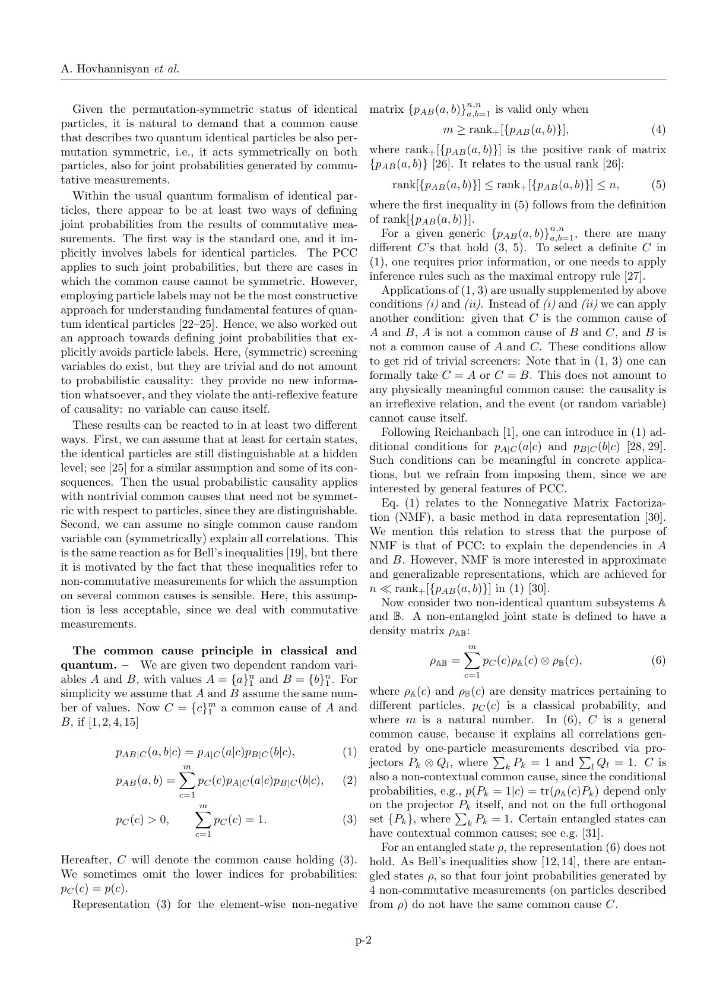
<figcaption class="paper-figure-caption"><b>Fig 1.</b> Low-resolution page preview, page 2</figcaption>
</figure>
<figure class="paper-figure-card">
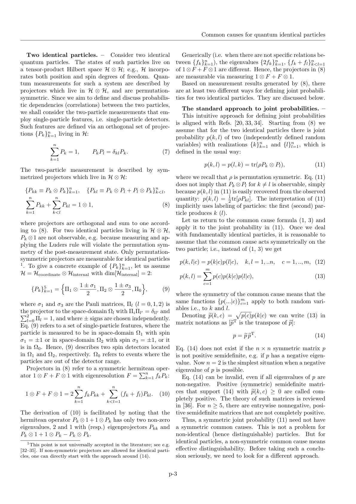
<figcaption class="paper-figure-caption"><b>Fig 2.</b> Low-resolution page preview, page 3</figcaption>
</figure>
<figure class="paper-figure-card">
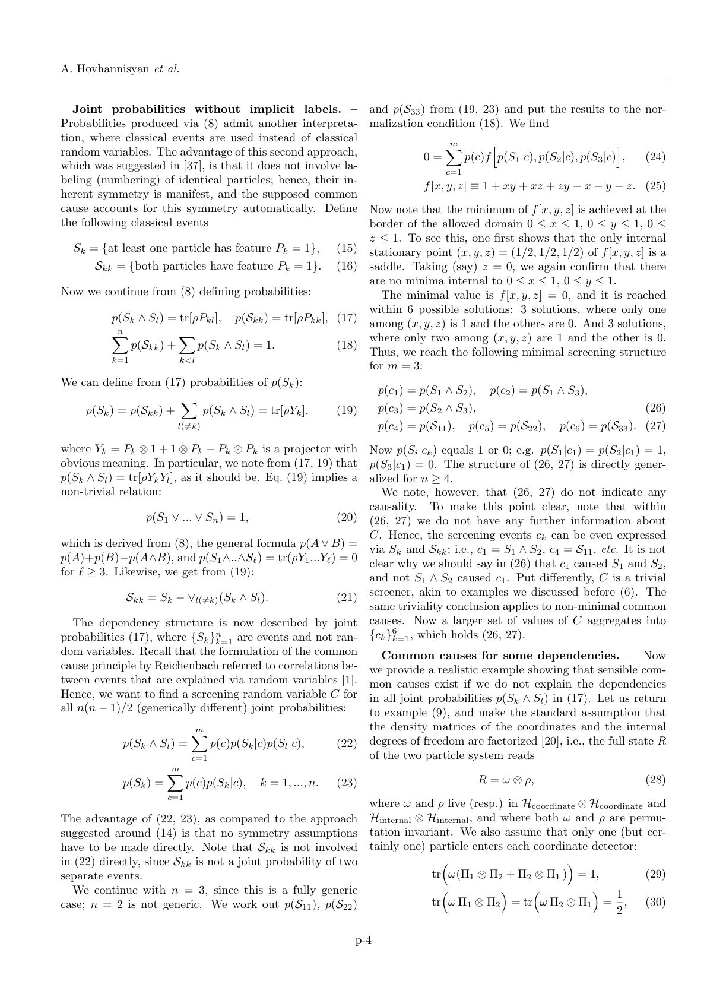
<figcaption class="paper-figure-caption"><b>Fig 3.</b> Low-resolution page preview, page 4</figcaption>
</figure>
<figure class="paper-figure-card">
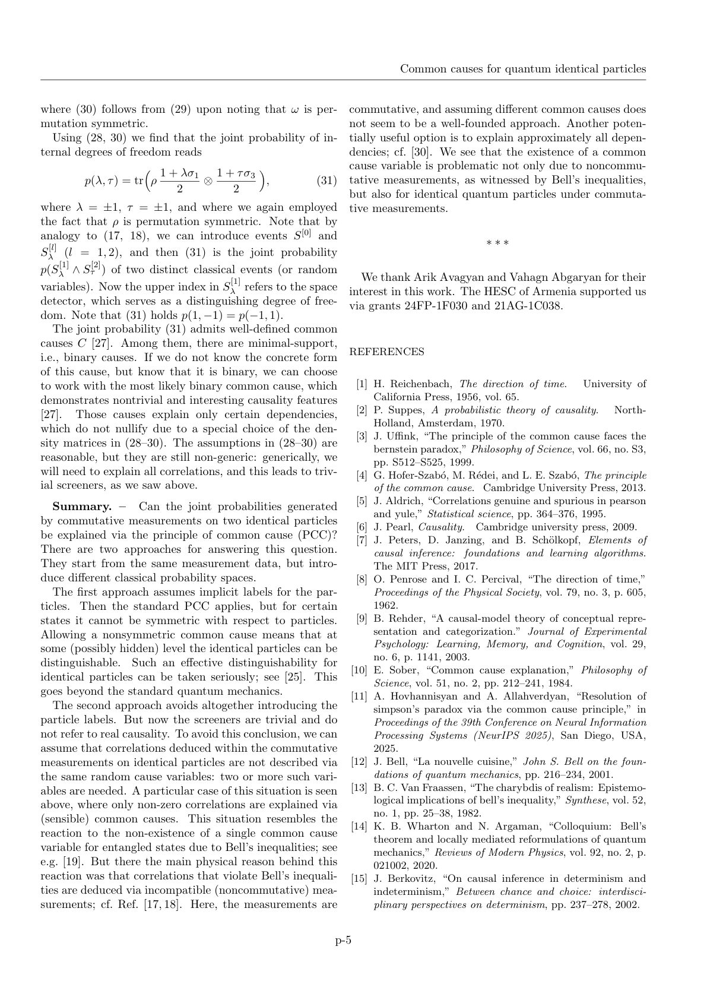
<figcaption class="paper-figure-caption"><b>Fig 4.</b> Low-resolution page preview, page 5</figcaption>
</figure>
<figure class="paper-figure-card">
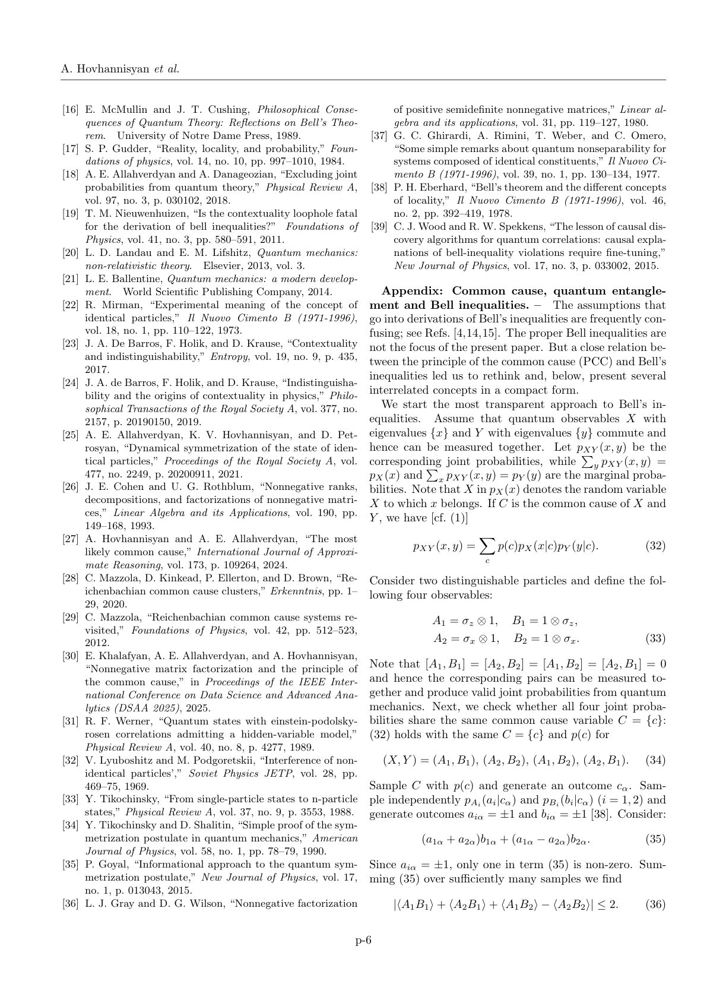
<figcaption class="paper-figure-caption"><b>Fig 5.</b> Low-resolution page preview, page 6</figcaption>
</figure>
</div>

<p><strong>Summary.</strong> This theoretical paper examines the Principle of Common Cause (PCC) applied to joint probabilities measured on two identical quantum particles. It finds that due to the required permutation symmetry of observables, a single common cause variable is either non-existent or trivial. This suggests that explaining all observed correlations requires assuming effective distinguishability between the particles.</p>
<p><strong>Why it may be interesting.</strong> This work directly tackles fundamental issues at the intersection of quantum foundations and causality (PCC), which is crucial for understanding how local hidden variables might manifest in multi-particle quantum systems, even when measurements are commutative.</p>
<details>
<summary>Detailed structure</summary>
<p><strong>Main problem.</strong> The paper investigates whether joint probabilities measured on two identical quantum particles can be explained by a single common cause, contrasting this with non-identical particles and addressing the constraints imposed by quantum mechanics.</p>
<p><strong>Main result.</strong> The analysis concludes that either symmetric common causes do not necessarily exist (suggesting hidden distinguishability), or any existing symmetric screening variables are trivial, meaning no single common cause can explain all measured correlations.</p>
<p><strong>Method.</strong> It applies the Probabilistic Common Cause (PCC) framework to joint probabilities derived from measurements on identical particles, comparing results obtained by assuming particle labels versus using label-free event descriptions.</p>
<p><strong>Model / system.</strong> The system involves two identical quantum particles whose observables must be permutation-symmetric. The analysis uses projectors related to spatial and internal spin degrees of freedom within a tensor-product Hilbert space.</p>
<p><strong>Key observables.</strong> Joint probabilities $p(A, B)$ derived from measurements; screening variables $C$ used in the common cause factorization.</p>
<p><strong>Important parameters / regimes.</strong> The requirement for permutation symmetry on observables and the structure of the joint probability distributions.</p>
<p><strong>Assumptions / limitations.</strong> The core assumption is testing the applicability of the PCC framework to quantum correlations, particularly when restricted by particle indistinguishability (permutation symmetry).</p>
<p><strong>Figures summary.</strong> Not specified in the provided notes.</p>
<p><strong>Paper structure.</strong> The paper moves from discussing non-identical particles and Bell violations to focusing on identical particles. It compares labeled vs. event-based common cause approaches, ultimately concluding that the constraints imposed by quantum indistinguishability severely limit or eliminate the possibility of a single common cause variable.</p>
</details>
<details>
<summary>Abstract</summary>
<p>Violations of Bell's inequalities imply that joint probabilities generated by non-commutative measurements on two (non-identical) quantum particles do not have a single common cause. But joint probabilities generated for such non-identical particles via commutative measurements do have non-trivial common cause variables. We focus on commutative measurements and consider two identical quantum particles, whose density matrices and observables (hermitian operators) are necessarily permutation-symmetric. It is natural to demand that the common cause describing joint probabilities is also permutation symmetric, i.e., it acts symmetrically on both particles. Looking at various ways of defining joint probabilities from the same measurement data, we conclude that either symmetric common causes need not exist (i.e., that the particles can be hiddenly distinguishable), or that symmetric screening variables exist, but they are trivial, i.e., no single common cause can explain all single-measurement correlations.</p>
</details>
<p><sub><a href="#top">↑ back to top</a></sub></p>

<p><a id="paper-2606.22479"></a></p>
<h3 id="quantum-metric-bound-state-of-light-confinement"><a href="http://arxiv.org/abs/2606.22479v1">Quantum Metric Bound State of Light Confinement</a></h3>
<p><strong>Authors:</strong> Jinchao Zhao, Rongning Liu, Xue-Yang Song, K. T. Law<br>
<strong>Type:</strong> theory · <strong>Category:</strong> disordered systems and neural networks · <strong>PDF:</strong> <a href="https://arxiv.org/pdf/2606.22479v1">https://arxiv.org/pdf/2606.22479v1</a><br>
<strong>Analysis basis:</strong> full PDF text, analyzed in chunks
<strong>Topic relevance:</strong> <code>Kondo &amp; dissipative impurity</code> <strong>2/5</strong> · <code>analog quantum simulation</code> <strong>2/5</strong> · <code>Keldysh / 2PI / non-Gaussian methods</code> <strong>1/5</strong> · <code>correlated / nonlocal dissipation</code> <strong>1/5</strong> · <code>correlated cavity matter</code> <strong>1/5</strong> · <code>driven-dissipative phase transition</code> <strong>1/5</strong> · <code>interference shaping light</code> <strong>1/5</strong> · <code>methods for driven-dissipative</code> <strong>1/5</strong></p>
<div class="figure-strip-hint">↔ Scroll figures horizontally</div>
<div class="paper-figures-scroll">
<figure class="paper-figure-card">
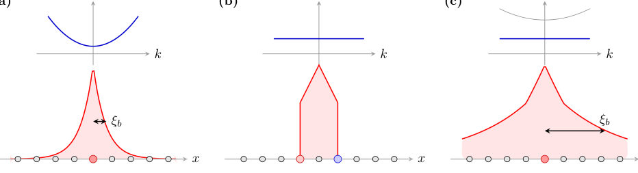
<figcaption class="paper-figure-caption"><b>Fig 1.</b> FIG. 1: (a) In traditional dispersive bands, the spatial extent (ξb) of a defect-induced bound state is governed by the effective mass m∗and the bound state energy Eb. (b) In an exact flat-band, the Compact Localized States are achieved given that the defect profiles are fine-tuned. (c) A generic local impurity breaks the phase-matching conditions for a CLS, and the bound state develops an extensive evanescent tail, bounded from below by the quantum metric length ℓQM of the unperturbed flat band. Here N = (n −1)m, where n is the number of bands, and m is the largest hopping range of electrons.</figcaption>
</figure>
<figure class="paper-figure-card">
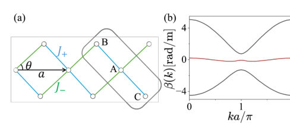
<figcaption class="paper-figure-caption"><b>Fig 2.</b> FIG. 2: (a) Schematic of the one-dimensional photonic Lieb lattice. Each unit cell (gray box) consists of three waveg- uides, labeled A, B, and C. The lattice constant is a = 84µm, and the waveguide diameter is d = 7.4µm. The substrate refraction index is n0 = 1.5, and the refraction index of waveguides is n = 1.5005. The angle ∠Bx+1AxCx is fixed at 90◦. The asymmetry between the coupling strengths J+ and J−is controlled by the angle θ. (b) The band structure of the one-dimensional photonic Lieb lattice, calculated by COMSOL. We normalize the propagation constant β(k) by subtracting the average value of the center band.</figcaption>
</figure>
<figure class="paper-figure-card">
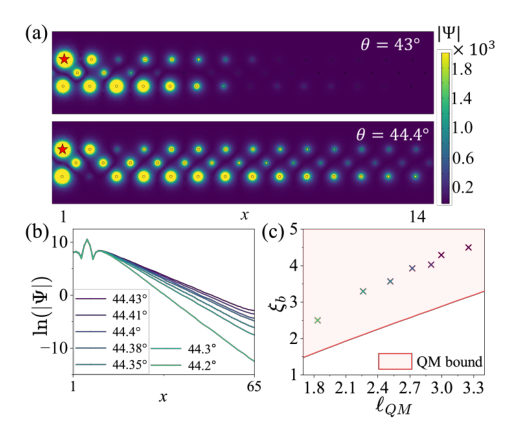
<figcaption class="paper-figure-caption"><b>Fig 3.</b> FIG. 3: (a) Electric field intensity showing the gradual de- cay along the unit cells. The red star marks the waveguide with the altered refractive index. (b) The bound state con- figurations at the centers of the B sites of different values of θ. The short-range oscillations arise from the polynomial prefactor as shown in Eq. 4. (c) Comparison between ξb and ℓQM for different θ using the same legend color in panel b. The shaded area is defined by Eq. 7 with N = 2. All the simulations are performed under the weak impurity limit by setting ∆nb/∆n = 0.05%,</figcaption>
</figure>
</div>

<p><strong>Summary.</strong> The paper introduces the concept of the 'quantum metric bound state,' establishing that when perfect localization fails due to disorder, the spatial decay rate of confined waves is universally limited by the bulk quantum metric. By deriving this rigorous lower bound using advanced spectral methods, it provides a powerful, predictive design principle for engineering wave confinement in synthetic platforms.</p>
<p><strong>Why it may be interesting.</strong> This work connects fundamental concepts from algebraic geometry (quantum metrics) directly to measurable physical properties like mode decay length in engineered photonic or electronic systems, providing a powerful new diagnostic tool for wave engineering.</p>
<details>
<summary>Detailed structure</summary>
<p><strong>Main problem.</strong> To establish a universal, model-independent geometric lower bound for the spatial decay length of defect-induced bound states in flat-band lattices when perfect localization conditions are broken by generic impurities.</p>
<p><strong>Main result.</strong> The exponential decay length ($\xi_b$) is rigorously proven to be lower-bounded by the bulk quantum metric ($\ell_{QM}$), establishing $\xi_b \gtrsim C \cdot \ell_{QM}$.</p>
<p><strong>Method.</strong> The analysis uses Green's function formalism, complex momentum continuation (pole structure analysis), and Bernstein-type inequalities applied to band projection operators.</p>
<p><strong>Model / system.</strong> The study models light confinement in photonic lattices, using the Lieb lattice as a primary example. The physics is governed by a tight-binding Hamiltonian analyzed via Schrödinger-like equations with local impurities breaking perfect symmetry.</p>
<p><strong>Key observables.</strong> Confinement Length Scales ($\xi_b$), Quantum Metric Length ($\ell_{QM}$), and the decay rate derived from pole singularities in the complex momentum plane.</p>
<p><strong>Important parameters / regimes.</strong> The bound depends on the algebraic degree $N$ of the projection operator, leading to a scaling $\xi_b \gtrsim 4/N^2 \cdot \ell_{QM}$.</p>
<p><strong>Assumptions / limitations.</strong> Assumes weak-guidance conditions and that the flat band projection operator belongs to a rational trigonometric space for the rigorous bounding techniques.</p>
<p><strong>Figures summary.</strong> Figures compare decay lengths in three regimes (dispersive, CLS, Quantum Metric Bound State) and show simulations confirming the geometric floor set by $\ell_{QM}$.</p>
<p><strong>Paper structure.</strong> The paper progresses from identifying the problem of confinement breakdown to deriving a mathematical lower bound using advanced spectral theory (Bernstein-type inequalities), culminating in demonstrating that this metric provides a universal, predictive design principle.</p>
</details>
<details>
<summary>Abstract</summary>
<p>The spatial confinement of defect-induced bound states is conventionally governed by the effective mass in dispersive bands. More recently, Compact Localized States (CLSs) arising from exact destructive interference have been utilized to achieve confinement in flat bands. However, CLSs rely on pristine lattice symmetries and fine-tuned defect profiles. The introduction of a generic local impurity inevitably breaks these strict phase-matching conditions, resulting in extensive bound states whose fundamental length scale has remained an open question. Here, we establish a third regime of confinement: the quantum metric bound state. We provide a rigorous mathematical proof demonstrating that in the absence of kinetic energy and CLS protection, the exponential decay length of these states is lower-bounded by the quantum metric of the unperturbed flat band. We demonstrate the tightness of this geometric limit by constructing a family of highly tunable flat-band generators, and we verify its universality across diverse realistic architectures. Ultimately, this classification establishes the independently measurable quantum metric as a predictive design principle for engineering confined modes in synthetic wave platforms.</p>
</details>
<p><sub><a href="#top">↑ back to top</a></sub></p>

<p><a id="paper-2606.21681"></a></p>
<h3 id="heavy-tailed-dispersal-kernels-from-stopped-subdiffusive-fractional-brownian-motion"><a href="http://arxiv.org/abs/2606.21681v1">Heavy-Tailed Dispersal Kernels from Stopped Subdiffusive Fractional Brownian Motion</a></h3>
<p><strong>Authors:</strong> Luis F. Gordillo, Priscilla E. Greenwood<br>
<strong>Type:</strong> theory · <strong>Category:</strong> statistical mechanics · <strong>PDF:</strong> <a href="https://arxiv.org/pdf/2606.21681v1">https://arxiv.org/pdf/2606.21681v1</a><br>
<strong>Analysis basis:</strong> full PDF text, analyzed in chunks
<strong>Topic relevance:</strong> <code>non-equilibrium dynamics</code> <strong>2/5</strong> · <code>non-equilibrium universality</code> <strong>2/5</strong> · <code>Keldysh / 2PI / non-Gaussian methods</code> <strong>1/5</strong> · <code>correlated / nonlocal dissipation</code> <strong>1/5</strong> · <code>driven-dissipative phase transition</code> <strong>1/5</strong> · <code>methods for driven-dissipative</code> <strong>1/5</strong></p>
<div class="figure-strip-hint">↔ Scroll figures horizontally</div>
<div class="paper-figures-scroll">
<figure class="paper-figure-card">
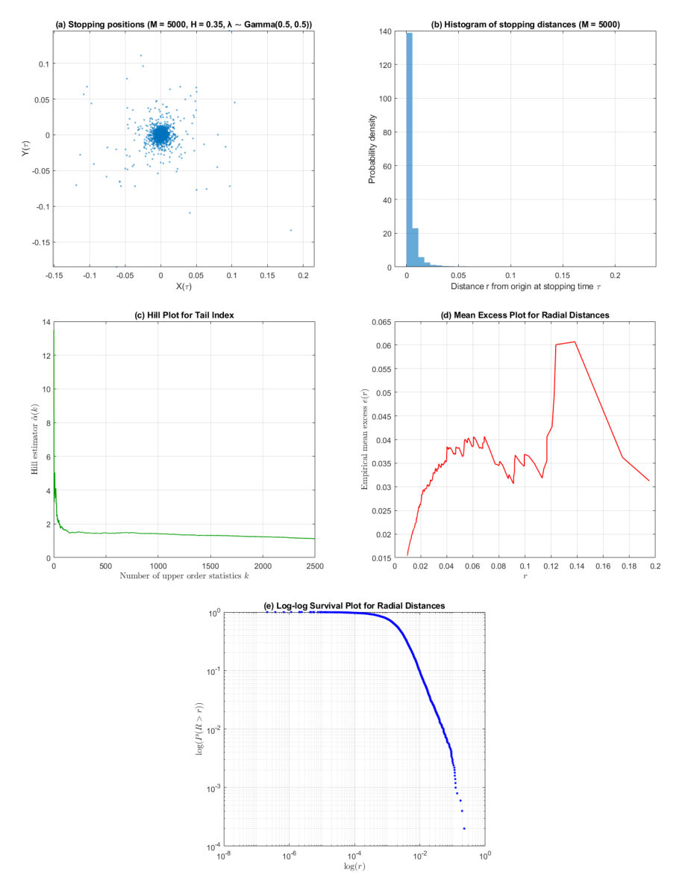
<figcaption class="paper-figure-caption"><b>Fig 1.</b> Figure 1: Radial distribution of stopped paths of a subdiffusive fBm with randomized stopping rate λ ∼ Gamma(a, b). (a) Stopped positions, (b) Histogram of stopping distances. The diagnostic plots: Hill (c), Mean-excess (d) and Log-log survival (e), consistently support the presence of a heavy tail in the distribution of radial distances, see text.</figcaption>
</figure>
<figure class="paper-figure-card">
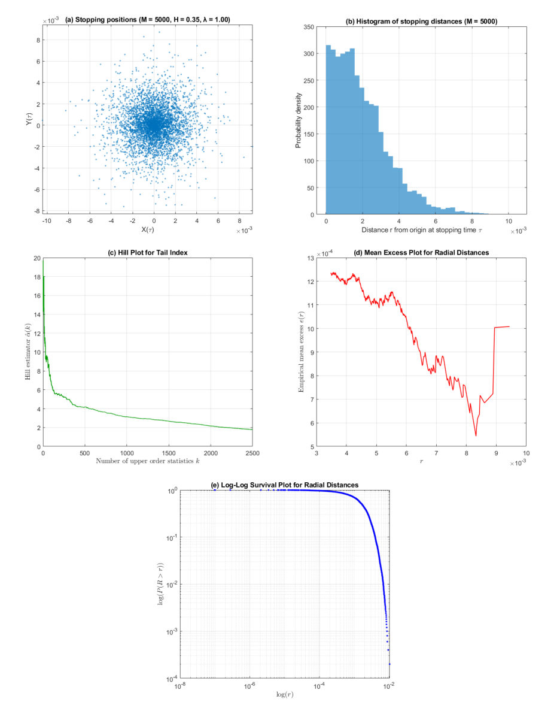
<figcaption class="paper-figure-caption"><b>Fig 2.</b> Figure 2: Same plot as Figure (1) but with constant stopping rate λ = 1. Notice the difference in scale from Figure (1), see also Figure (3). The diagnostic plots (c), (d) and (e) support the absence of a heavy tail.</figcaption>
</figure>
<figure class="paper-figure-card">
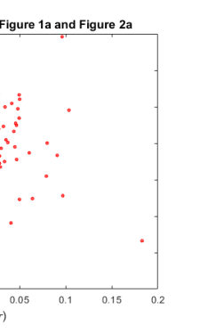
<figcaption class="paper-figure-caption"><b>Fig 3.</b> Figure 3: Scatter plots in Figure (1)a (red) and Figure (2)a (blue) superposed for comparison.</figcaption>
</figure>
<figure class="paper-figure-card">
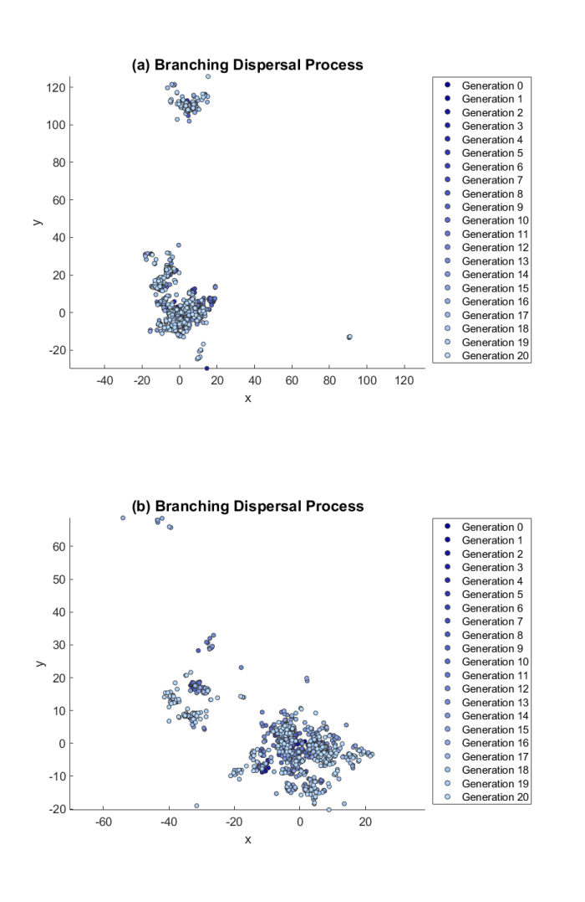
<figcaption class="paper-figure-caption"><b>Fig 4.</b> Figure 4: Two simulations of a spatial population process showing clumping and long-distance dispersal. The population is initialized at the origin with five individuals. Offspring numbers follow a Poisson distribution with mean 1.2, and offspring are dispersed radially according to g(r) defined by (7), with H = 0.35, a = b = 0.5, and direction uniformly distributed on [0, 2π]. Each simulation is run for 20 generations beyond the initial population.</figcaption>
</figure>
</div>

<p><strong>Summary.</strong> This paper proposes a refined model for particle dispersal by combining subdiffusive fractional Brownian motion with stopping times whose rates are drawn from a Gamma distribution. This heterogeneity successfully generates the heavy-tailed power-law decay necessary to describe rare, long-distance events while retaining the localized clumping characteristic of the underlying subdiffusion process.</p>
<p><strong>Why it may be interesting.</strong> While focused on physical dispersal, the mathematical techniques used—analyzing heavy tails arising from multiplicative noise or randomized rates in anomalous diffusion processes—are highly relevant to non-equilibrium statistical mechanics problems involving complex particle interactions or energy dissipation.</p>
<details>
<summary>Detailed structure</summary>
<p><strong>Main problem.</strong> To develop a model for dispersal kernels that accurately describe both localized clumping and rare, long-distance dispersal events by generating heavy tails.</p>
<p><strong>Main result.</strong> By introducing heterogeneity in the stopping rate (making it Gamma-distributed), the resulting radial density function exhibits a power-law decay $g(r) \sim r^{-1 - a/H}$, confirming a heavy-tailed distribution.</p>
<p><strong>Method.</strong> The analysis involves deriving and performing asymptotic analysis on the radial probability density function by combining subdiffusive fractional Brownian motion (fBm) with randomized exponential stopping times.</p>
<p><strong>Model / system.</strong> The system models particle dispersal using subdiffusive fBm ($H < 1/2$) where the stopping time rate ($\lambda$) is drawn from a Gamma distribution. This combination generates the required heavy-tailed statistics for realistic environmental modeling.</p>
<p><strong>Key observables.</strong> Radial probability density function $g(r)$ and its tail behavior, specifically the power-law decay $r^{-1 - a/H}$ as $r 	o \infty$.</p>
<p><strong>Important parameters / regimes.</strong> Hurst exponent ($H$), Gamma distribution parameters ($a, b$), and the diffusion parameter ($\sigma$). The regime of interest is subdiffusion ($0 < H < 1/2$).</p>
<p><strong>Assumptions / limitations.</strong> The analysis relies on approximations valid in the large-$r$ limit (e.g., $t \gg b$) and assumes that the underlying movement follows fBm.</p>
<p><strong>Figures summary.</strong> Figures compare simulation results for randomized vs. constant stopping rates, showing clear heavy tails only when rate randomization is included. Hill plots and Mean-excess plots are used to diagnose this tail behavior.</p>
<p><strong>Paper structure.</strong> The paper establishes the failure of simple models (exponential decay) for long-distance dispersal, proposes randomizing the stopping rate parameter ($\lambda \sim 	ext{Gamma}$), derives the asymptotic power-law tail $g(r) \sim r^{-1 - a/H}$, and validates this result through both analytical methods and numerical simulations.</p>
</details>
<details>
<summary>Abstract</summary>
<p>Subdiffusive fractional Brownian motions produce localized aggregation when particles are stopped at exponentially distributed times. In applications where clumping and long-distance dispersal events are observed simultaneously, such as in some instances of seed dispersal, this model fails to describe the tails of the data. The resulting redistribution kernel has only an exponentially decaying tail, whereas a heavier tail is needed for modeling the long-distance dispersal observed. Here we propose a model in which subdiffusive particles stop at exponentially distributed times, but with a rate parameter that is Gamma distributed. This heterogeneity in stopping rates causes the density of final radial positions to have a heavy-tailed distribution. Our model retains the strong localized clumping characteristic of subdiffusive fractional Brownian motion while simultaneously generating the heavy tails required for realistic long-distance dispersal.</p>
</details>
<p><sub><a href="#top">↑ back to top</a></sub></p>

<p><a id="paper-2606.23677"></a></p>
<h3 id="effective-hyperuniformity-in-time-integrated-stochastic-turing-patterns"><a href="http://arxiv.org/abs/2606.23677v1">Effective hyperuniformity in time-integrated stochastic Turing patterns</a></h3>
<p><strong>Authors:</strong> Anirban Mukherjee, Hong-Yan Shih<br>
<strong>Type:</strong> theory · <strong>Category:</strong> statistical mechanics · <strong>PDF:</strong> <a href="https://arxiv.org/pdf/2606.23677v1">https://arxiv.org/pdf/2606.23677v1</a><br>
<strong>Analysis basis:</strong> full PDF text, analyzed in chunks
<strong>Topic relevance:</strong> <code>non-equilibrium dynamics</code> <strong>2/5</strong> · <code>Keldysh / 2PI / non-Gaussian methods</code> <strong>1/5</strong> · <code>correlated / nonlocal dissipation</code> <strong>1/5</strong> · <code>driven-dissipative phase transition</code> <strong>1/5</strong> · <code>methods for driven-dissipative</code> <strong>1/5</strong> · <code>non-equilibrium universality</code> <strong>1/5</strong></p>
<div class="figure-strip-hint">↔ Scroll figures horizontally</div>
<div class="paper-figures-scroll">
<figure class="paper-figure-card">
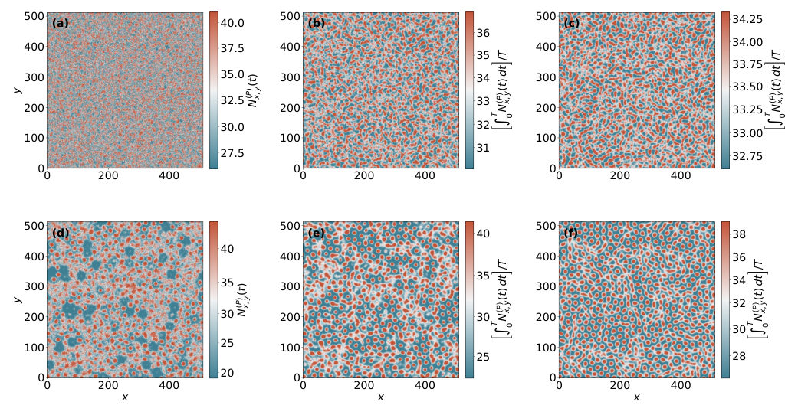
<figcaption class="paper-figure-caption"><b>Fig 1.</b> Figure 1: Spatial patterns of prey in the 2D Levin-Segel model on a 512 × 512 grid (b = e = d = 0.5, p = 1, µ = 1, V = 100). (a–c) ν/µ = 20; (d–f) ν/µ = 26. Left panels (a,d): instantaneous steady-state configurations; middle and right panels (b,e) and (c,f): time-averaged over T = 32 and T = 1024 respectively, revealing how the spatially organized population structure gradually emerges as the integration time increases, absent in any single snapshot. The 2D simulation is shown for visual purposes only; all quantitative analyses are performed on the 1D model.</figcaption>
</figure>
<figure class="paper-figure-card">
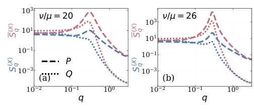
<figcaption class="paper-figure-caption"><b>Fig 2.</b> Figure 2: Instantaneous S(X) q and time-integrated S (X) q structure factors for prey and predator at ν/µ = 20 (a) and 26 (b). A peak signals the appearance of a spatial pattern: at ν/µ = 20, the predator shows no discernible peak instantaneously, and it only emerges after time in- tegration, while the prey already shows a peak in both, but with a stronger one after time integration.</figcaption>
</figure>
<figure class="paper-figure-card">
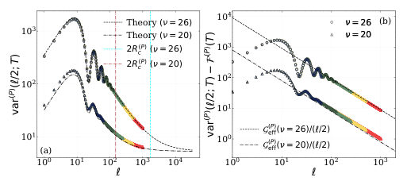
<figcaption class="paper-figure-caption"><b>Fig 3.</b> Figure 4: Subsystem variance of time-integrated prey density (X = P) at T = 4096, for ν/µ = 20 (R(P ) c ≈ 75) and ν/µ = 26 (R(P ) c ≈850). Symbols: simula- tion data for L = 128–2048 (color codes as in Fig. 3); dashed lines: LNA predictions with no fitting parame- ters. (a) var(P )(ℓ/2; T) converged to var(P )(ℓ/2); verti- cal lines mark ℓ= 2R(P ) c . (b) Subleading 1/ℓdecay after subtracting F(P ), quantitatively captured by the LNA with no intrinsic cutoff.</figcaption>
</figure>
<figure class="paper-figure-card">
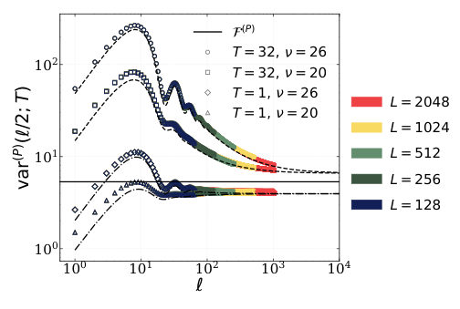
<figcaption class="paper-figure-caption"><b>Fig 4.</b> Figure 3: Prey subsystem variance var(P )(ℓ/2; T) versus subsystem size ℓ, at ν/µ = 20 (away from the Turing instability) and ν/µ = 26 (near it), for integration times T = 1 and T = 32. Symbols: simulation data; dashed lines: LNA predictions. At T = 32, fluctuations are en- hanced near the Turing scale ℓ∗and suppressed beyond it — the signature of large-scale spatial organization absent at T = 1. The long-time saturation var(P )(ℓ/2) →F(P )</figcaption>
</figure>
<figure class="paper-figure-card">
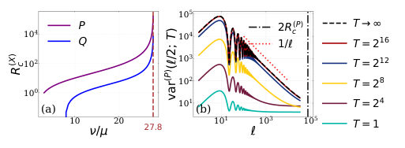
<figcaption class="paper-figure-caption"><b>Fig 5.</b> Figure 5: (a) Crossover radius R(X) c versus ν/µ, com- puted from the LNA, diverges as the deterministic Tur- ing instability (ν/µ = 27.8, dashed vertical line) is approached, with the prey (activator) diverging more strongly than the predator (inhibitor). (b) Analytically obtained, the intensive variance of prey at ν/µ = 27.7, as a function of subsystem size ℓ, for integration times T = 1, 16, 256, 4096, 65536 and T →∞(dashed black); the vertical dot-dashed line marks the cutoff length 2R(P ) c . The diverging R(P ) c sets an increasingly wide hyperuniform-scaling regime ℓ≪2R(P ) c as T →∞ (see [54] for the predator).</figcaption>
</figure>
</div>

<p><strong>Summary.</strong> This work analyzes stochastic Turing patterns in reaction-diffusion systems, showing that integrating fluctuations over time reveals a hidden large-scale order. This emergent structure exhibits effective hyperuniformity, meaning long-wavelength density variations are suppressed by a finite kinetic floor. The methodology uses advanced statistical tools like the structure factor analysis within the Linear Noise Approximation.</p>
<p><strong>Why it may be interesting.</strong> While focused on classical statistical mechanics, the concept of emergent organization via filtering (time integration) is analogous to how quantum correlations or entanglement can be revealed by time evolution measurements in open quantum systems.</p>
<details>
<summary>Detailed structure</summary>
<p><strong>Main problem.</strong> The study investigates how robust, large-scale spatial organization emerges from stochastic Turing patterns when considering time integration of fluctuating local populations.</p>
<p><strong>Main result.</strong> Time integration acts as a dynamical filter that reveals an emergent effective hyperuniformity in the density fluctuations, characterized by a $1/R$ decay in variance over intermediate scales.</p>
<p><strong>Method.</strong> The analysis uses the Linear Noise Approximation (LNA) applied to stochastic reaction-diffusion equations and analyzes the time-integrated structure factor in Fourier space.</p>
<p><strong>Model / system.</strong> The model is a generic two-species stochastic reaction-diffusion process, exemplified by the Levin-Segel predator-prey system, evolving on a lattice with periodic boundary conditions.</p>
<p><strong>Key observables.</strong> Time-integrated demographic fluctuations ($\Xi(X)_r(T)$), structure factor $S(X)_q(T)$, and intensive variance $   ext{var}(X)(R; T)$.</p>
<p><strong>Important parameters / regimes.</strong> The ratio of diffusion rates ($
u/\mu$) relative to the deterministic instability point, and the integration time $T$.</p>
<p><strong>Assumptions / limitations.</strong> The analysis relies on the Linear Noise Approximation (LNA) and assumes that the system reaches a steady state for the structure factor in the long-time limit ($T 	o \infty$).</p>
<p><strong>Figures summary.</strong> Figures illustrate the emergence of patterns in time-integrated vs. instantaneous snapshots, showing variance decay as $1/\ell$ over increasingly broad regions near instability.</p>
<p><strong>Paper structure.</strong> The paper establishes the mathematical framework using LNA for stochastic fluctuations, derives the structure factor for time-integrated configurations, and then applies this to the Levin-Segel model to demonstrate the transition from instantaneous noise to long-range hyperuniform order.</p>
</details>
<details>
<summary>Abstract</summary>
<p>Demographic noise generates stochastic Turing patterns even when reaction-diffusion systems are deterministically stable. We show analytically and verify numerically in the Levin-Segel model that temporal integration of configurations reveals emergent large-scale organization. The intensive number variance in a window of size $R \gg 1$ approaches a finite reaction-kinetic floor as $1/R$, over a spatial range growing by orders of magnitude near the Turing instability. This yields an effectively hyperuniform, fine-tuning-free regime previously unidentified in non-conserved multispecies stochastic systems.</p>
</details>
<p><sub><a href="#top">↑ back to top</a></sub></p>

<p><a id="paper-2606.23553"></a></p>
<h3 id="skewness-tunes-the-small-drift-record-rate-of-random-walks-and-levy-flights"><a href="http://arxiv.org/abs/2606.23553v1">Skewness tunes the small-drift record rate of random walks and Lévy flights</a></h3>
<p><strong>Authors:</strong> José Ricardo G. Mendonça<br>
<strong>Type:</strong> theory · <strong>Category:</strong> statistical mechanics · <strong>PDF:</strong> <a href="https://arxiv.org/pdf/2606.23553v1">https://arxiv.org/pdf/2606.23553v1</a><br>
<strong>Analysis basis:</strong> full PDF text, analyzed in chunks
<strong>Topic relevance:</strong> <code>non-equilibrium universality</code> <strong>2/5</strong> · <code>Keldysh / 2PI / non-Gaussian methods</code> <strong>1/5</strong> · <code>analog quantum simulation</code> <strong>1/5</strong> · <code>driven-dissipative phase transition</code> <strong>1/5</strong> · <code>non-equilibrium dynamics</code> <strong>1/5</strong></p>
<div class="figure-strip-hint">↔ Scroll figures horizontally</div>
<div class="paper-figures-scroll">
<figure class="paper-figure-card">
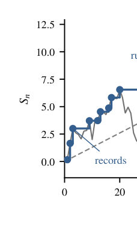
<figcaption class="paper-figure-caption"><b>Fig 1.</b> Figure 1: A biased random walk Sn (grey) with small positive drift µ, its running maximum</figcaption>
</figure>
<figure class="paper-figure-card">
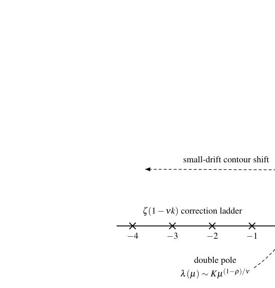
<figcaption class="paper-figure-caption"><b>Fig 2.</b> Figure 2: Poles of G(s) = csh∗(s)ζ(1+νs) in the complex s-plane: a double pole at s = 0 (leading law) and simple poles at the negative integers (correction ladder). Sweeping the</figcaption>
</figure>
<figure class="paper-figure-card">
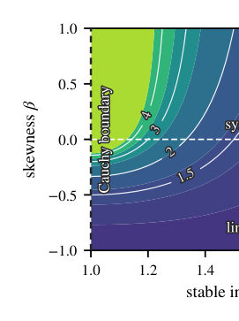
<figcaption class="paper-figure-caption"><b>Fig 3.</b> Figure 3: Phase portrait of the small-drift record rate. The leading exponent (1 −ρ)/ν of λ(µ) ∼Kµ(1−ρ)/ν over the stable index 1 &lt; α ⩽2 and skewness −1 ⩽β ⩽1, from Eqs. (12)–(13). It equals 1 along the entire diffusive edge α = 2 and the descending-skew edge β = −1, rises to 1/(α −1) on the ascending-skew edge β = +1, and diverges as the</figcaption>
</figure>
<figure class="paper-figure-card">
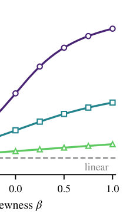
<figcaption class="paper-figure-caption"><b>Fig 4.</b> Figure 4: Skew-tuned exponent. The leading record-rate exponent (1−ρ)/ν as a function of skewness, sweeping [1, 1/(α −1)] as β runs from −1 to +1 for fixed α. Curves are Eq. (13); open symbols mark parameter values used in numerical checks of the Spitzer– Baxter sum (4). The dashed line marks the linear small-drift exponent, (1 −ρ)/ν = 1;</figcaption>
</figure>
</div>

<p><strong>Summary.</strong> This theoretical paper determines the precise small-drift scaling law for the rate at which random walks set new records. By utilizing Mellin transforms on a harmonic sum identity, the authors show that this record rate's exponent is continuously controlled by the skewness of the step distribution via the positivity parameter $
ho$. This unifies results across Gaussian, heavy-tailed, and skewed random walk regimes.</p>
<p><strong>Why it may be interesting.</strong> While not directly quantum mechanical, the rigorous mathematical framework connecting asymptotic scaling laws (like record rates) to underlying distributional symmetries ($\alpha, eta$) is highly relevant for understanding critical phenomena or non-equilibrium dynamics in complex quantum systems.</p>
<details>
<summary>Detailed structure</summary>
<p><strong>Main problem.</strong> The paper investigates how the rate at which a random walk or Lévy flight sets new records (the record rate, $\lambda(\mu)$) depends on small positive drift ($\mu$). It specifically analyzes this dependence as the drift approaches zero.</p>
<p><strong>Main result.</strong> The record rate exhibits an asymptotic power-law scaling $\lambda(\mu) \sim K\mu^{(1-
ho)/
u}$, where the exponent is continuously tuned by the skewness of the underlying step distribution through the positivity parameter $
ho$.</p>
<p><strong>Method.</strong> The analysis heavily relies on using Mellin transforms applied to the harmonic sum derived from the Spitzer–Baxter identity, allowing for a unified treatment across different types of random walks.</p>
<p><strong>Model / system.</strong> The model is a general random walk $S_n$ with i.i.d. steps $\xi_i$, which can be characterized by their limiting stable law index ($\alpha$) and skewness ($eta$). The analysis covers both diffusive (Gaussian) and heavy-tailed Lévy flight regimes.</p>
<p><strong>Key observables.</strong> The record rate $\lambda(\mu)$, the expected maximum $E(M_N)$, and the exponent governing the small-$\mu$ decay of these quantities.</p>
<p><strong>Important parameters / regimes.</strong> Drift ($\mu$), stable law index ($\alpha \in (1, 2]$), positivity parameter ($
ho = P(Y&gt;0)$), and skewness ($eta$).</p>
<p><strong>Assumptions / limitations.</strong> The results are exact for Gaussian and strictly stable steps but extend to the domains of attraction at the leading power level. The analysis assumes the applicability of Mellin transform techniques to factorize the relevant harmonic sums.</p>
<p><strong>Figures summary.</strong> Figure 1 illustrates record setting in a biased random walk as $\mu 	o 0$. Figure 2 shows the poles of the Mellin transform, distinguishing the leading law from correction terms. Figure 3 and 4 map the exponent's dependence on skewness ($eta$) across different stable indices ($\alpha$).</p>
<p><strong>Paper structure.</strong> The paper establishes the connection between the record rate and a harmonic sum via the Spitzer–Baxter identity. It then employs Mellin transforms to analyze this sum in the small-drift limit, deriving the leading power law dependence on $\mu$ and showing how skewness controls the exponent through $
ho$.</p>
</details>
<details>
<summary>Abstract</summary>
<p>A random walk with small positive drift $μ$ sets new records at a rate $λ(μ)$ that vanishes as $μ\to 0$. For centered steps attracted to a stable law $Y$ with index $1 < α\leq 2$ and positivity parameter $ρ= P(Y>0)$, we find $λ(μ) \sim Kμ^{(1-ρ)/ν}$, $ν=1-1/α$, as $μ\to 0$. The result is exact for Gaussian and strictly stable steps, and extends at the leading-power level to their domains of attraction. The exponent is set by the asymmetry only through $ρ$, sweeping the interval $[1,\,1/(α-1)]$ as the skewness varies. It recovers the Gaussian linear law with slope $\sqrt{2}$ and, for symmetric heavy tails, the power $μ^{α/2(α-1)}$; beyond the stable tail ratio, distributional details enter through the prefactor $K$, which is explicit for strictly stable steps. The result follows directly from one Mellin transform of the harmonic sum in the Spitzer-Baxter identity, which factorizes into a kernel transform and a Riemann $ζ$ factor whose poles deliver at once the leading law, its prefactor, and a correction ladder, unifying diffusive, heavy-tailed, and skewed walks. The same transform also yields the expected maximum, recovering Kingman's heavy-traffic law for queues and Siegmund's corrected-diffusion constant as adjacent poles.</p>
</details>
<p><sub><a href="#top">↑ back to top</a></sub></p>

<p><a id="paper-2606.21715"></a></p>
<h3 id="evaluation-of-variational-quantum-classifiers-vqc-for-cyberattack-detection-in-the-nisq-era"><a href="http://arxiv.org/abs/2606.21715v1">Evaluation of Variational Quantum Classifiers (VQC) for Cyberattack Detection in the NISQ Era</a></h3>
<p><strong>Authors:</strong> Angelos Thomos, Theodore Andronikos<br>
<strong>Type:</strong> experiment · <strong>Category:</strong> quantum information and computing · <strong>PDF:</strong> <a href="https://arxiv.org/pdf/2606.21715v1">https://arxiv.org/pdf/2606.21715v1</a><br>
<strong>Analysis basis:</strong> full PDF text, analyzed in chunks
<strong>Topic relevance:</strong> <code>QC/QI experiment</code> <strong>2/5</strong> · <code>entanglement &amp; information structure</code> <strong>1/5</strong> · <code>methods for driven-dissipative</code> <strong>1/5</strong> · <code>quantum measurements</code> <strong>1/5</strong></p>
<div class="figure-strip-hint">↔ Scroll figures horizontally</div>
<div class="paper-figures-scroll">
<figure class="paper-figure-card">
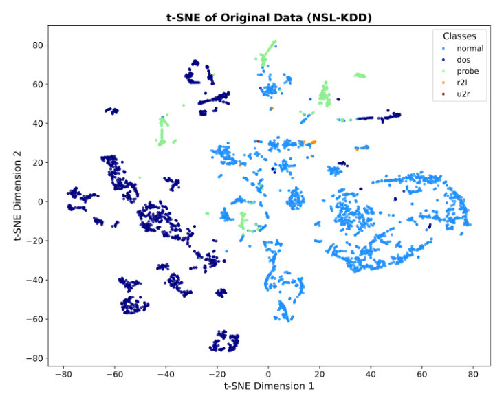
<figcaption class="paper-figure-caption"><b>Fig 1.</b> Figure 1: Visualizing the complex dataset distribution using a t-SNE projection on the official 20% NSL- KDD research subset.</figcaption>
</figure>
<figure class="paper-figure-card">
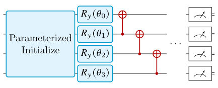
<figcaption class="paper-figure-caption"><b>Fig 2.</b> Figure 2: VQC architecture showcasing the state preparation block followed by a RealAmplitudes-style ansatz.</figcaption>
</figure>
<figure class="paper-figure-card">
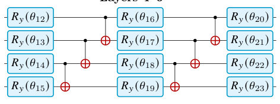
<figcaption class="paper-figure-caption"><b>Fig 3.</b> Figure 3: Detailed architecture of the RealAmplitudes ansatz (reps=5), highlighting the parameterized 𝑅𝑦rotation layers and the linear entanglement topology.</figcaption>
</figure>
<figure class="paper-figure-card">
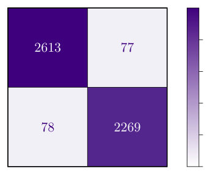
<figcaption class="paper-figure-caption"><b>Fig 4.</b> Figure 4: Performance evaluation of the classical baseline: Confusion Matrix of the 4-Node Tiny MLP, simulating the extreme dimensional constraint of the quantum architecture.</figcaption>
</figure>
<figure class="paper-figure-card">
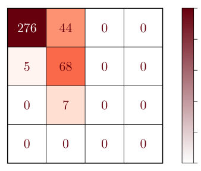
<figcaption class="paper-figure-caption"><b>Fig 5.</b> Figure 5: Confusion matrix for the imbalanced four-class VQC experiment, visually demonstrating the model’s complete failure to predict minority classes (R2L and U2R).</figcaption>
</figure>
</div>

<p><strong>Summary.</strong> This work evaluates Variational Quantum Classifiers (VQC) for cyberattack detection using limited qubits. The study demonstrates that forcing high-dimensional network data into a small quantum state via amplitude encoding severely limits the model's representational capacity compared to classical neural networks. The authors conclude that future quantum advantage requires abandoning aggressive feature compression in favor of broader Hilbert space representations.</p>
<p><strong>Why it may be interesting.</strong> While focused on cybersecurity, the core technical challenge—quantifying the expressibility gap between quantum circuits and classical models when data is compressed—is highly relevant to understanding resource limitations in variational quantum algorithms for complex physical simulations.</p>
<details>
<summary>Detailed structure</summary>
<p><strong>Main problem.</strong> The paper investigates the structural limits of Variational Quantum Classifiers (VQC) for detecting network anomalies in the Noisy Intermediate-Scale Quantum (NISQ) era.</p>
<p><strong>Main result.</strong> Aggressive data compression via Amplitude Encoding into a small number of qubits severely restricts the VQC's expressiveness, leading to performance ceilings significantly below classical benchmarks.</p>
<p><strong>Method.</strong> The authors developed and tested a 4-qubit VQC using amplitude encoding on the NSL-KDD dataset, comparing its performance against classical MLPs and analyzing optimization convergence.</p>
<p><strong>Model / system.</strong> The model is a hybrid quantum-classical circuit consisting of state preparation (Amplitude Encoding), a trainable parameterized ansatz (RealAmplitudes), and Z-basis measurement. It operates on NISQ devices simulated via statevector simulators.</p>
<p><strong>Key observables.</strong> Binary classification accuracy (88% achieved vs 97% classical MLP); in-sample diagnostic accuracy (9%); mode collapse behavior.</p>
<p><strong>Important parameters / regimes.</strong> 4 qubits, 24 trainable parameters, 16 principal components (from PCA), COBYLA/SPSA optimizers.</p>
<p><strong>Assumptions / limitations.</strong> The primary limitation is the aggressive dimensionality reduction imposed by amplitude encoding; furthermore, the results do not isolate the encoding from ansatz depth or optimizer budget.</p>
<p><strong>Figures summary.</strong> Figures illustrate t-SNE projections of class overlaps and confusion matrices comparing VQC performance against classical baselines (Tiny MLP).</p>
<p><strong>Paper structure.</strong> The paper systematically details data preprocessing (PCA, Target Encoding), constructs the 4-qubit VQC pipeline, evaluates it using multiple optimizers, compares results to classical MLPs, and concludes by proposing a shift towards uncompressed angle encoding.</p>
</details>
<details>
<summary>Abstract</summary>
<p>This paper investigates the effectiveness and structural limits of Variational Quantum Classifiers (VQC) for detecting network anomalies in the era of Noisy Intermediate-Scale Quantum (NISQ) systems. Using the official 20\% research subset of the NSL-KDD dataset, a 4-qubit classifier featuring a 24-parameter trainable ansatz was developed, utilizing amplitude encoding to embed 16 principal components. On a held-out partition of this subset, the model achieved a consistent binary-classification accuracy of 88\%. A comparative evaluation with two fundamentally different optimizers, COBYLA and SPSA, found that the observed performance plateau is not attributable to convergence to local minima, a result we interpret as consistent with an encoding-related expressibility limit rather than an optimization artifact. An architectural parity comparison with a classical neural network (a Tiny MLP with four nodes, achieving 97\% accuracy) highlighted the expressiveness gap associated with data overcompression into restricted quantum states. The model was trained on a class-balanced set spanning the 22 raw NSL-KDD attack categories and evaluated in-sample as a probe of representational capacity: under this configuration the VQC reached only 9\% accuracy and exhibited a degenerate mode collapse onto a small subset of classes. We interpret this behavior as consistent with the loss of linear separability induced by excessive compression in the quantum probability space, while explicitly noting that our experiments do not isolate the encoding from the ansatz depth, optimizer budget, and measurement-decoding scheme (see Limitations). Motivated by these observations and by Cover's theorem, we outline an alternative paradigm: a 16-qubit VQC with angle encoding that expands the Hilbert-space representation rather than relying on aggressive classical dimensionality reduction.</p>
</details>
<p><sub><a href="#top">↑ back to top</a></sub></p>

<p><a id="paper-2606.23194"></a></p>
<h3 id="quantum-advantage-in-tolerant-junta-testing"><a href="http://arxiv.org/abs/2606.23194v1">Quantum Advantage in Tolerant Junta Testing</a></h3>
<p><strong>Authors:</strong> Avishay Tal, Weiqiang Yuan<br>
<strong>Type:</strong> theory · <strong>Category:</strong> quantum information and computing · <strong>PDF:</strong> <a href="https://arxiv.org/pdf/2606.23194v1">https://arxiv.org/pdf/2606.23194v1</a><br>
<strong>Analysis basis:</strong> full PDF text, analyzed in chunks
<strong>Topic relevance:</strong> <code>entanglement &amp; information structure</code> <strong>2/5</strong> · <code>quantum measurements</code> <strong>2/5</strong> · <code>Keldysh / 2PI / non-Gaussian methods</code> <strong>1/5</strong></p>
<div class="figure-strip-hint">↔ Scroll figures horizontally</div>
<div class="paper-figures-scroll">
<figure class="paper-figure-card">
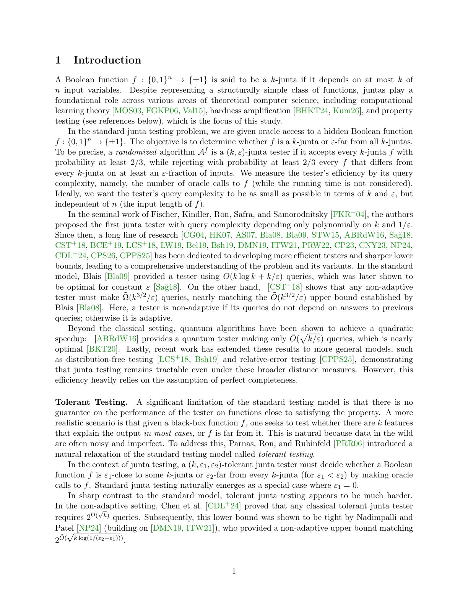
<figcaption class="paper-figure-caption"><b>Fig 1.</b> Low-resolution page preview, page 2</figcaption>
</figure>
<figure class="paper-figure-card">
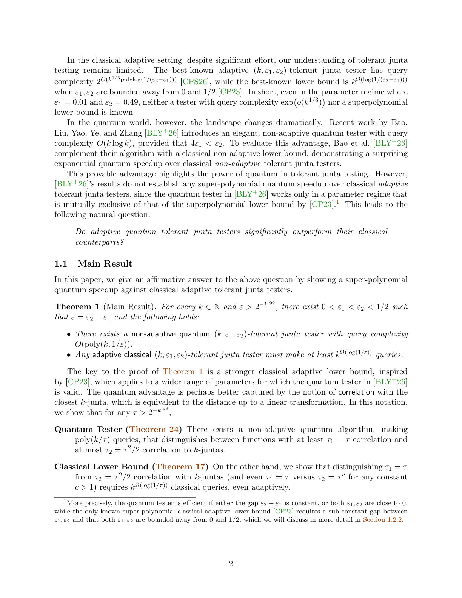
<figcaption class="paper-figure-caption"><b>Fig 2.</b> Low-resolution page preview, page 3</figcaption>
</figure>
<figure class="paper-figure-card">
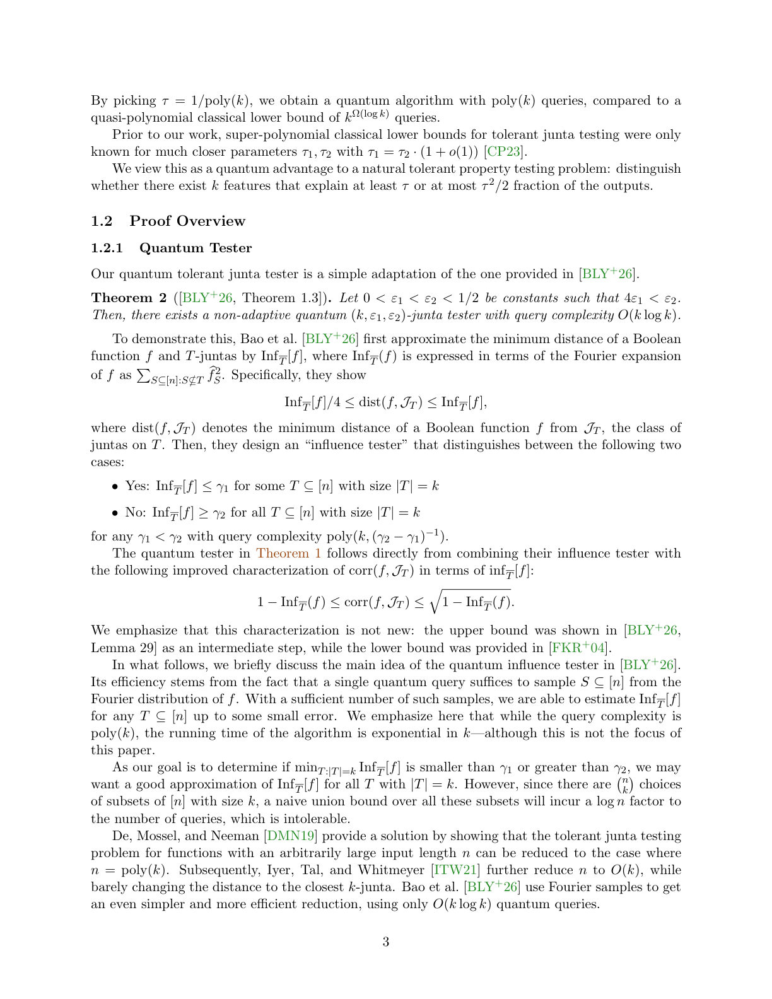
<figcaption class="paper-figure-caption"><b>Fig 3.</b> Low-resolution page preview, page 4</figcaption>
</figure>
<figure class="paper-figure-card">
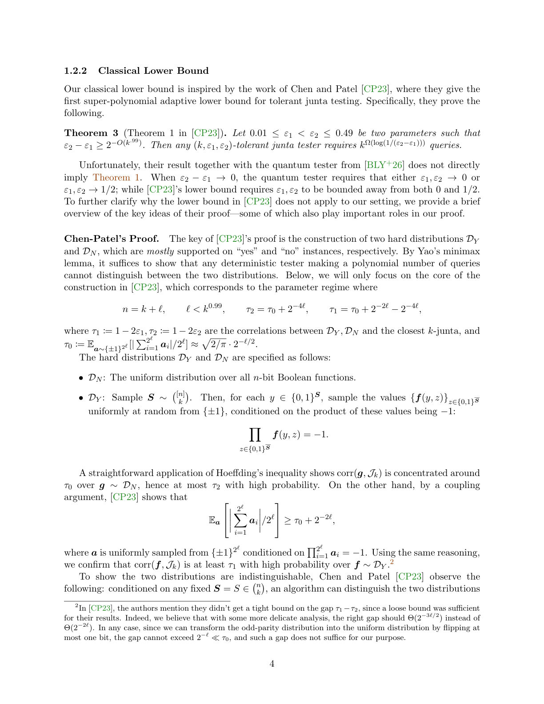
<figcaption class="paper-figure-caption"><b>Fig 4.</b> Low-resolution page preview, page 5</figcaption>
</figure>
<figure class="paper-figure-card">
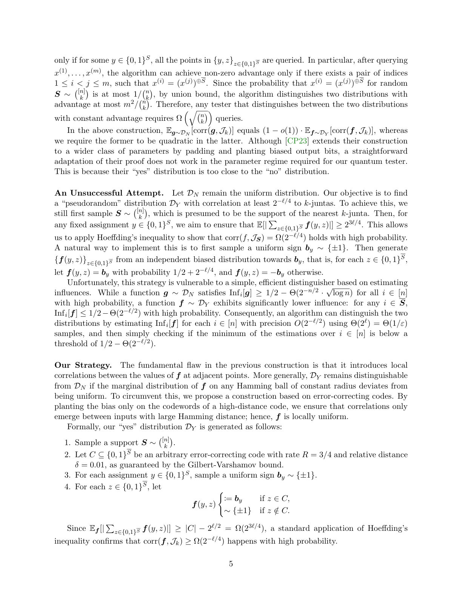
<figcaption class="paper-figure-caption"><b>Fig 5.</b> Low-resolution page preview, page 6</figcaption>
</figure>
</div>

<p><strong>Summary.</strong> This paper proves a super-polynomial quantum advantage for testing whether a Boolean function is close to being defined by only $k$ variables (a $k$-junta). It achieves this using an efficient quantum tester and establishes the lower bound classically by constructing hard distributions based on error-correcting codes. This work significantly advances the understanding of computational limits in property testing.</p>
<p><strong>Why it may be interesting.</strong> Although focused on computational complexity theory, the techniques used—especially constructing hard distributions and proving query complexity gaps—are foundational to understanding the limits of information extraction from complex physical measurements or noisy data sets in quantum physics.</p>
<details>
<summary>Detailed structure</summary>
<p><strong>Main problem.</strong> The paper establishes a super-polynomial quantum advantage for solving the tolerant $k$-junta testing problem in an adaptive setting.</p>
<p><strong>Main result.</strong> It shows that the problem can be solved with $ ext{poly}(k)$ quantum queries, while any classical algorithm requires at least $k^{\Omega(\log k)}$ queries under specific parameter regimes.</p>
<p><strong>Method.</strong> The quantum advantage is demonstrated using a specialized non-adaptive quantum tester adapted from prior work. The corresponding classical lower bound relies on constructing hard distributions for 'yes' instances based on error-correcting codes and applying Yao's minimax lemma.</p>
<p><strong>Model / system.</strong> The model involves black-box access to a Boolean function $f: \{0, 1\}^n 	o \{\pm 1\}$, which is tested for its proximity (tolerance) to being defined by only $k$ variables (a $k$-junta).</p>
<p><strong>Key observables.</strong> Query complexity (number of oracle calls), correlation $   ext{corr}(f, J_T)$, and the parameters defining closeness ($\varepsilon_1$) and distance ($\varepsilon_2$).</p>
<p><strong>Important parameters / regimes.</strong> The regime requires $0 \le \varepsilon_1 < \varepsilon_2 \le 1/2$, particularly focusing on small gaps $\varepsilon = \varepsilon_2 - \varepsilon_1$.</p>
<p><strong>Assumptions / limitations.</strong> The quantum tester used is non-adaptive, and the super-polynomial classical lower bound requires a sub-constant gap between $\varepsilon_1$ and $\varepsilon_2$.</p>
<p><strong>Paper structure.</strong> The paper reviews standard junta testing, introduces tolerant testing for noisy data, presents Theorem 1 establishing the quantum advantage via both an efficient quantum tester and a novel classical lower bound based on hard distributions.</p>
</details>
<details>
<summary>Abstract</summary>
<p>We establish the first super-polynomial quantum advantage for the tolerant junta testing problem in the adaptive setting. Specifically, we show that within a certain parameter regime, tolerant $k$-junta testing with high precision can be solved using $\mathrm{poly}(k)$ quantum queries, whereas any classical algorithm requires at least $k^{Ω(\log k)}$ queries.   The problem of tolerant $k$-junta testing is as follows: given parameters $(k, ε_1, ε_2)$, with $0\le ε_1<ε_2 \le 1/2$, and black-box access to a Boolean function $f$ (defined on $n$ variables), distinguish whether $f$ is $ε_1$-close to some $k$-junta or $ε_2$-far from every $k$-junta.   We show the quantum advantage for a range of parameters close to $1/2$, for example, $ε_1 = 1/2-1/k$ and $ε_2 = 1/2-1/(2k^2)$. The (non-adaptive) quantum tester we use was given by a recent work of Bao, Liu, Yao, Ye, and Zhang (SOSA 2026). We slightly adapt their analysis to show that it holds in the above parameter regime. On the other hand, our classical lower bound requires substantial new ideas. Inspired by the lower bound techniques of Chen and Patel (FOCS 2023), we introduce a new hard distribution of <code>yes'' instances (i.e., instances with distance at most $ε_1$ to $k$-juntas) that is based on planting an</code>approximate-junta'' as follows: we randomly pick $k$ out of $n$ coordinates, and for each fixing of the $k$ coordinates, the $2^{n-k}$ values in the restricted subcube are drawn randomly except for the set of points in an error-correcting code on which we place the same random bit. We show that this distribution is much closer to $k$-juntas than the uniform distribution, but on the other hand, they are indistinguishable with respect to any classical algorithm making $k^{o(\log k)}$ queries.</p>
</details>
<p><sub><a href="#top">↑ back to top</a></sub></p>

<p><a id="paper-2606.23239"></a></p>
<h3 id="quantum-key-distribution-without-shared-reference-frame-under-unital-noise"><a href="http://arxiv.org/abs/2606.23239v1">Quantum Key Distribution Without Shared Reference Frame Under Unital Noise</a></h3>
<p><strong>Authors:</strong> Junaid ur Rehman, Shehbaz Tariq, Symeon Chatzinotas<br>
<strong>Type:</strong> theory · <strong>Category:</strong> quantum information and computing · <strong>PDF:</strong> <a href="https://arxiv.org/pdf/2606.23239v1">https://arxiv.org/pdf/2606.23239v1</a><br>
<strong>Analysis basis:</strong> full PDF text, analyzed in chunks
<strong>Topic relevance:</strong> <code>quantum measurements</code> <strong>2/5</strong> · <code>correlated / nonlocal dissipation</code> <strong>1/5</strong> · <code>driven-dissipative phase transition</code> <strong>1/5</strong> · <code>methods for driven-dissipative</code> <strong>1/5</strong></p>
<div class="figure-strip-hint">↔ Scroll figures horizontally</div>
<div class="paper-figures-scroll">
<figure class="paper-figure-card">
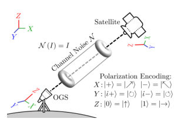
<figcaption class="paper-figure-caption"><b>Fig 1.</b> Fig. 1. The system model. The transmitter and receiver lack a shared reference frame, which is exemplified as a satellite-to-ground quantum communication link where the local frames of reference do not coincide with the global reference. Polarization encoding of photons in global reference frame does not translate to the same in either of the local references.</figcaption>
</figure>
<figure class="paper-figure-card">
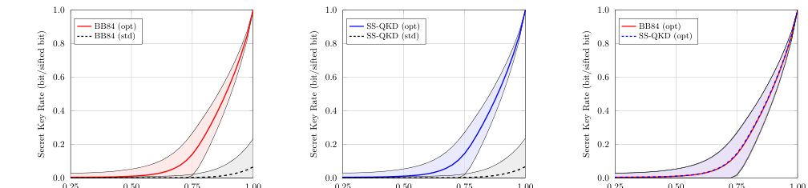
<figcaption class="paper-figure-caption"><b>Fig 2.</b> Fig. 2. Secret key rate (bits per sifted detected signal) as a function of channel parameter ϵ. The optimized signaling, as proposed in the main text, compensates well for the absence of shared reference frame, as evidenced by the ideal secret key rate for the unitary/noiseless channel up to an unknown rotation, i.e., ϵ = 1.</figcaption>
</figure>
<figure class="paper-figure-card">
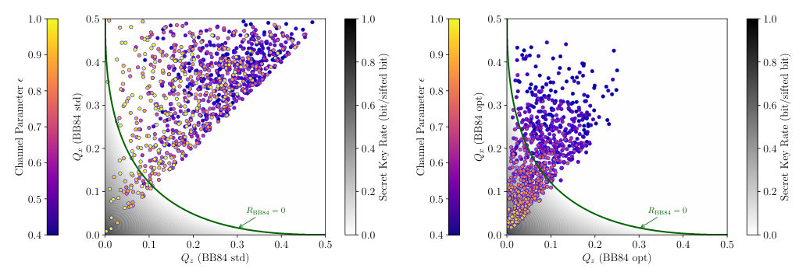
<figcaption class="paper-figure-caption"><b>Fig 3.</b> Fig. 3. Secret key rate (bits per sifted detected signal) as a function of QBERs in Z and X basis. The scatter points show the QBERs of numerical simulations with (a) standard, i.e., without basis optimization, and (b) optimized basis BB84 in random unitary channels.</figcaption>
</figure>
<figure class="paper-figure-card">
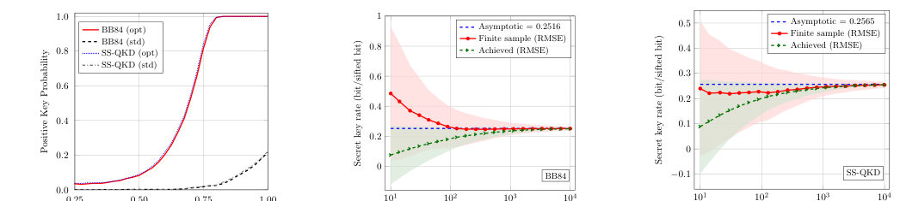
<figcaption class="paper-figure-caption"><b>Fig 4.</b> Fig. 4. Robustness checks for the optimized signaling. (a) Positive-key probability, Pr{R &gt; 0}, over the random unitary channel ensemble as a function of the channel parameter ϵ. (b) Finite-sample PTM-based basis estimation for BB84 at ϵ = 0.8, shown as a function of the number of shots per PTM entry, Ns. (c) Corresponding finite-sample PTM-based basis estimation for six-state QKD at ϵ = 0.8. In (b) and (c), the dashed line denotes the exact-PTM asymptotic rate, the finite-sample curve denotes the rate computed from the noisy estimated PTM, and the achieved-rate curve denotes the rate obtained when the finite-sample optimized bases are applied to the underlying simulated channel. Shaded...</figcaption>
</figure>
</div>

<p><strong>Summary.</strong> This paper tackles the practical challenge of Quantum Key Distribution when communicating parties lack a shared reference frame over noisy channels. The authors introduce two robust methods—PTM analysis and Sequential Basis Matching—to determine optimal local measurement bases. They prove these methods yield equivalent, enhanced key rates compared to standard protocols, significantly improving theoretical performance estimates for real-world quantum links.</p>
<p><strong>Why it may be interesting.</strong> This work is highly relevant to quantum optics and open quantum systems because it provides a rigorous framework for optimizing communication protocols under realistic, non-ideal environmental constraints (like relative motion in satellite links) that violate idealized assumptions of perfect alignment.</p>
<details>
<summary>Detailed structure</summary>
<p><strong>Main problem.</strong> The core problem is establishing secret keys via Quantum Key Distribution (QKD) when communication occurs over an unknown, stationary, unital qubit channel without the communicating parties sharing a global reference frame.</p>
<p><strong>Main result.</strong> Both proposed methods—Pauli Transfer Matrix (PTM) analysis and Sequential Basis Matching (SBM)—yield equivalent results, demonstrating that optimized local signaling can recover positive key rates even when standard assumptions about basis alignment fail.</p>
<p><strong>Method.</strong> The authors propose two complementary theoretical approaches: one using the PTM derived from channel characterization via SVD, and another operational approach called SBM that iteratively optimizes measurement bases based on observed error probabilities.</p>
<p><strong>Model / system.</strong> The system models QKD over a qubit channel characterized by unknown unitaries ($U_A, U_B$) and unital noise ($\mathcal{N}$). The analysis relies heavily on the Pauli basis representation of quantum states and channels.</p>
<p><strong>Key observables.</strong> Secret key rates (for BB84 and six-state protocols), Quantum Bit Error Rates (QBERs) in X, Y, and Z bases, and the effective channel's PTM parameters.</p>
<p><strong>Important parameters / regimes.</strong> The channel noise strength ($\epsilon$), which quantifies the deviation from ideal transmission; the number of measurement shots ($N_s$) for finite-sample analysis.</p>
<p><strong>Assumptions / limitations.</strong> The quantum channel is assumed to be stationary and unital. The primary challenge addressed is the violation of the shared reference frame assumption, rather than modeling specific physical noise sources like loss or dark counts.</p>
<p><strong>Figures summary.</strong> Figures compare secret key rates vs. channel parameter $\epsilon$ for standard versus optimized signaling; they also show QBER sets and finite-sample estimations demonstrating convergence to the theoretical PTM rate.</p>
<p><strong>Paper structure.</strong> The paper first establishes the physical challenge (QKD without shared reference frame). It then details two mathematical approaches: 1) Constructing the effective channel via PTM/SVD, and 2) Implementing SBM for sequential basis optimization. Finally, it compares the results and analyzes performance robustness.</p>
</details>
<details>
<summary>Abstract</summary>
<p>We consider a general and practical scenario of quantum key distribution (QKD) over an unknown, stationary, unital qubit channel. Furthermore, due to practical limitations, e.g., relative movement and rotation of communicating parties, a global shared reference frame cannot be established. This scenario can routinely appear in satellite QKD. We propose two methods to overcome the physical qubit noise and the lack of shared reference frame. The first proposed approach involves constructing the Pauli transfer matrix (PTM) description of the channel, which we achieve without requiring a shared reference frame, by absorbing the lack of shared reference frame in the channel definition. This is followed by the identification of singular vectors of PTM as the Bloch vectors for optimal signal states. In the optimized local bases, the resulting correlations are equivalent, up to outcome relabeling, to those of a Pauli channel, allowing us to show the optimality of the BB84 and six-state QKD protocols under these conditions. The second approach, called the sequential basis matching (SBM) involves sequentially identifying the channel-optimized local bases that enable QKD. We show that both of these approaches result in the same effective key exchange rate for QKD.</p>
</details>
<p><sub><a href="#top">↑ back to top</a></sub></p>

<p><a id="paper-2606.22017"></a></p>
<h3 id="the-market-crystal-a-spin-lattice-model-for-collective-cryptocurrency-states"><a href="http://arxiv.org/abs/2606.22017v1">The Market Crystal: A Spin-Lattice Model for Collective Cryptocurrency States</a></h3>
<p><strong>Authors:</strong> Hamidreza Oliaei-Moghadam<br>
<strong>Type:</strong> theory · <strong>Category:</strong> statistical mechanics · <strong>PDF:</strong> <a href="https://arxiv.org/pdf/2606.22017v1">https://arxiv.org/pdf/2606.22017v1</a><br>
<strong>Analysis basis:</strong> full PDF text, analyzed in chunks
<strong>Topic relevance:</strong> <code>non-equilibrium dynamics</code> <strong>2/5</strong> · <code>driven-dissipative phase transition</code> <strong>1/5</strong> · <code>exotic spin models in light-matter</code> <strong>1/5</strong> · <code>non-equilibrium universality</code> <strong>1/5</strong></p>
<div class="figure-strip-hint">↔ Scroll figures horizontally</div>
<div class="paper-figures-scroll">
<figure class="paper-figure-card">
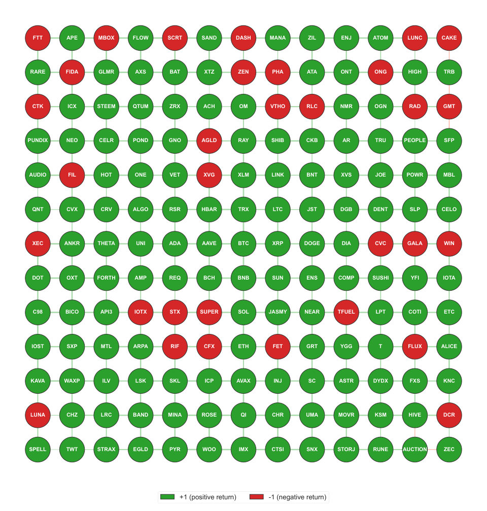
<figcaption class="paper-figure-caption"><b>Fig 1.</b> Figure 1: Two-dimensional snapshot of the Market Crystal configuration σ(t) on May 5, 2023. The N = 169 assets are arranged on a 13 × 13 lattice obtained through the correlation-based breadth-first search (CBFS) procedure, with Bitcoin (BTC) serving as the central seed node. Node colors represent the instantaneous spin state σi(t), where green indicates a positive daily return (σi = +1) and red indicates a negative return (σi = −1). Edges connect nearest-neighbor lattice sites and represent interaction couplings Jij = ρij derived from the empirical Pearson correlation matrix. The configuration shown illustrates a period of strong positive alignment across the market.</figcaption>
</figure>
<figure class="paper-figure-card">
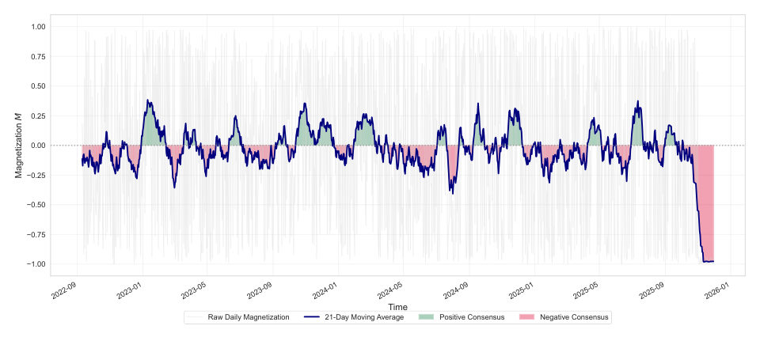
<figcaption class="paper-figure-caption"><b>Fig 2.</b> Figure 2: Temporal evolution of the market magnetization M(t). The faint gray curve shows the raw daily series, while the solid black curve denotes the 21-day moving average. Green and red shaded regions mark positive and negative ordered regimes, respectively, in which the market exhibits strong collective alignment. Periods where the smoothed magnetization remains near zero correspond to comparatively disordered market states.</figcaption>
</figure>
<figure class="paper-figure-card">
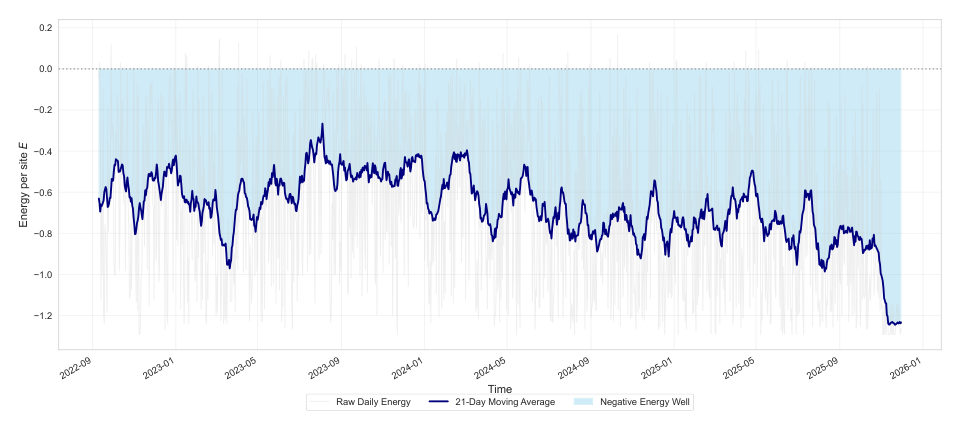
<figcaption class="paper-figure-caption"><b>Fig 3.</b> Figure 3: Energy dynamics of the Market Crystal. The time series shows the evolution of the system’s energy per site E(t) computed from the empirical interaction matrix Jij = ρij. Light gray lines represent the raw daily energy values, capturing high-frequency fluctuations of the microscopic configuration. The black curve denotes the 21-day moving average, revealing the slower structural evolution of the market state. The shaded gray region highlights the negative energy well, indicating periods in which asset states align with the empirical correlation structure and the system occupies a coherent configuration. A dashed horizontal line marks the neutral reference level E = 0. Deeper...</figcaption>
</figure>
<figure class="paper-figure-card">
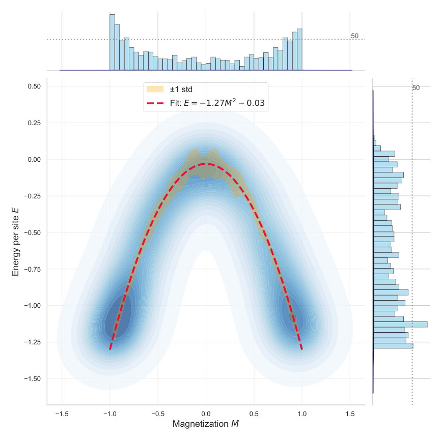
<figcaption class="paper-figure-caption"><b>Fig 4.</b> Figure 4: Energy–magnetization phase space of the Market Crystal. The blue density map shows the empirical distribution of market states in the (M, E) plane. The marginal histograms display the separate distributions of magnetization and energy; notably, the magnetization histogram exhibits a pronounced bimodal structure. The dashed red curve is a quadratic fit, approximately given by E = −1.27M 2 −0.03, and the orange band indicates the spread of energy values at different magnetization levels. The distribution follows a clear parabolic structure, with lower energies observed at larger |M| and a broader energy range near M ≈0.</figcaption>
</figure>
</div>

<p><strong>Summary.</strong> This paper models cryptocurrency market collective behavior using the framework of statistical mechanics, constructing an 'Market Crystal' based on asset correlations. By defining magnetization and energy observables derived from an Ising Hamiltonian, the authors characterize market states as oscillating between highly ordered (ferromagnetic-like) and disordered regimes.</p>
<p><strong>Why it may be interesting.</strong> It provides a concrete example of applying established concepts from condensed matter physics (Ising models, order parameters) to model non-equilibrium complex systems like financial markets, which is a key area in econophysics.</p>
<details>
<summary>Detailed structure</summary>
<p><strong>Main problem.</strong> The study aims to characterize the collective dynamics and emergent states within complex financial systems, specifically cryptocurrency markets.</p>
<p><strong>Main result.</strong> The market's phase space is organized around a quadratic relationship between energy and magnetization ($E \simeq -1.27M^2 - 0.03$), indicating that strong alignment (high $|M|$) corresponds to low structural energy.</p>
<p><strong>Method.</strong> The authors employ analogies from statistical mechanics, mapping asset returns onto binary spins ($\sigma_i$) and constructing an Ising-like Hamiltonian ($H = -\sum J_{ij}\sigma_i\sigma_j$).</p>
<p><strong>Model / system.</strong> The system is the 'Market Crystal,' a spin lattice embedding of 169 cryptocurrencies. Interactions ($J_{ij}$) are determined by historical Pearson correlation coefficients ($
ho_{ij}$), forming an Ising Hamiltonian.</p>
<p><strong>Key observables.</strong> Magnetization ($M(t)$) measures net directional alignment, and Energy ($E(t)$) quantifies structural coherence relative to the correlation matrix.</p>
<p><strong>Important parameters / regimes.</strong> The lattice size is $13 	imes 13$, and the coupling strengths are derived from empirical correlations over the observation period.</p>
<p><strong>Assumptions / limitations.</strong> The primary assumptions include treating historical correlations as fixed interaction strengths for the Hamiltonian, and using a heuristic CBFS procedure to embed assets onto a physical lattice structure.</p>
<p><strong>Figures summary.</strong> Figures illustrate the spin configuration on the lattice (Fig 1), the time evolution of magnetization ($M(t)$) and energy ($E(t)$) (Figs 2 &amp; 3), and the resulting phase space plot showing the quadratic relationship between $E$ and $M$, along with marginal histograms confirming bimodality.</p>
<p><strong>Paper structure.</strong> The paper establishes the analogy between market dynamics and spin systems, details the construction of the Market Crystal using correlation embedding, defines key observables ($M$ and $E$), analyzes their temporal evolution, and concludes by mapping the phase space structure to reveal underlying ordered regimes.</p>
</details>
<details>
<summary>Abstract</summary>
<p>Collective dynamics in financial markets can emerge through synchronized movements of large groups of assets. Motivated by analogies with interacting many-body systems, we introduce a spin-lattice representation for analyzing collective states in cryptocurrency markets. In this framework, assets are encoded as binary spin variables according to the sign of their returns, while correlations between assets determine effective interaction strengths. A correlation-based breadth-first search (CBFS) procedure embeds 169 cryptocurrencies into a $13 \times 13$ lattice, enabling the construction of an Ising-like Hamiltonian describing the market configuration, which we call the \emph{Market Crystal}. Macroscopic observables such as magnetization and energy provide a statistical-mechanical characterization of collective market states. The resulting phase-space structure highlights regimes of strong alignment and fragmentation among assets, with an energy--magnetization pattern suggestive of predominantly ferromagnetic interactions. This framework offers a statistical-mechanical viewpoint for studying collective behavior in financial systems.</p>
</details>
<p><sub><a href="#top">↑ back to top</a></sub></p>

<p><a id="paper-2606.21686"></a></p>
<h3 id="finite-shot-operating-windows-for-probabilistic-error-cancellation-and-clifford-data-regression"><a href="http://arxiv.org/abs/2606.21686v1">Finite-shot operating windows for probabilistic error cancellation and Clifford data regression</a></h3>
<p><strong>Authors:</strong> Vicenzo Scavino<br>
<strong>Type:</strong> theory · <strong>Category:</strong> quantum information and computing · <strong>PDF:</strong> <a href="https://arxiv.org/pdf/2606.21686v1">https://arxiv.org/pdf/2606.21686v1</a><br>
<strong>Analysis basis:</strong> full PDF text, analyzed in chunks
<strong>Topic relevance:</strong> <code>quantum measurements</code> <strong>2/5</strong> · <code>Keldysh / 2PI / non-Gaussian methods</code> <strong>1/5</strong></p>
<div class="figure-strip-hint">↔ Scroll figures horizontally</div>
<div class="paper-figures-scroll">
<figure class="paper-figure-card">
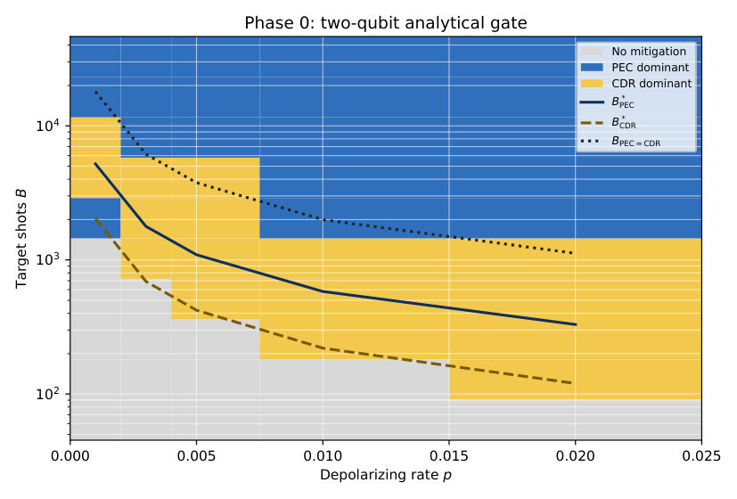
<figcaption class="paper-figure-caption"><b>Fig 1.</b> FIG. 1. Closed-form operating regions for the two-qubit example. The gray region is no mitigation,</figcaption>
</figure>
<figure class="paper-figure-card">
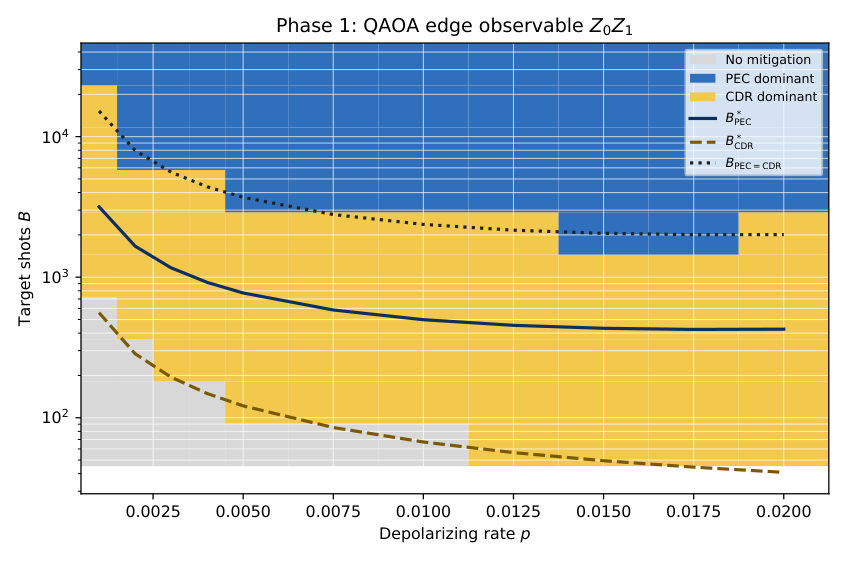
<figcaption class="paper-figure-caption"><b>Fig 2.</b> FIG. 2. Finite-shot QAOA comparison for the edge observable Z0Z1. The background color is</figcaption>
</figure>
<figure class="paper-figure-card">
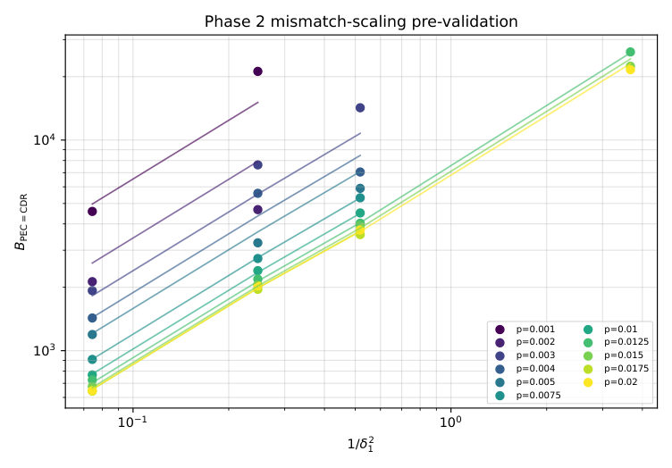
<figcaption class="paper-figure-caption"><b>Fig 3.</b> FIG. 3. Mismatch-scaling validation. The observed crossover scale follows the leading-order trend</figcaption>
</figure>
<figure class="paper-figure-card">
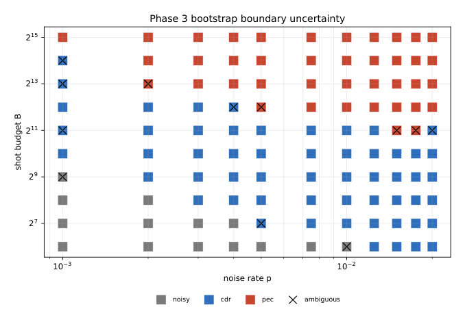
<figcaption class="paper-figure-caption"><b>Fig 4.</b> FIG. 4. Bootstrap boundary test. Ambiguity is concentrated near the predicted phase boundaries</figcaption>
</figure>
<figure class="paper-figure-card">
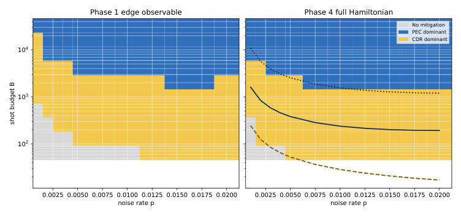
<figcaption class="paper-figure-caption"><b>Fig 5.</b> FIG. 5. Comparison between the baseline edge observable and the full commuting MaxCut Hamil-</figcaption>
</figure>
</div>

<p><strong>Summary.</strong> This paper rigorously compares Probabilistic Error Cancellation (PEC) and Clifford Data Regression (CDR) for mitigating noise in quantum measurements under limited experimental shots. It derives theoretical operating windows showing that the optimal technique switches based on the available shot budget and calibration quality. The findings provide crucial guidelines for designing practical, resource-aware quantum algorithms.</p>
<p><strong>Why it may be interesting.</strong> This work provides rigorous theoretical tools for resource optimization in near-term quantum computation by quantifying the precise finite-shot limits where different error mitigation strategies succeed or fail.</p>
<details>
<summary>Detailed structure</summary>
<p><strong>Main problem.</strong> The paper compares Probabilistic Error Cancellation (PEC) and Clifford Data Regression (CDR) for quantum error mitigation in the finite-shot regime to determine which technique minimizes Mean Square Error (MSE). It establishes operating windows where one method outperforms another based on shot budget.</p>
<p><strong>Main result.</strong> A finite crossover budget exists, $B_{	ext{PEC=CDR}}(p)$, beyond which PEC dominates CDR's performance. The analysis shows that the optimal strategy depends critically on the available measurement resources (shot budget) and calibration mismatch.</p>
<p><strong>Method.</strong> The authors derive mean-square-error boundaries for different estimators using small-$p$ expansions, comparing bias terms against variance overheads derived from Pauli observable measurements.</p>
<p><strong>Model / system.</strong> The analysis is applied to estimating expectation values of Pauli observables (e.g., MaxCut Hamiltonian) in quantum circuits subjected to local depolarizing noise models. The comparison framework involves PEC using quasi-probability inverses and CDR trained on classical data regression.</p>
<p><strong>Key observables.</strong> Mean Square Error (MSE), finite-shot gain ($\Delta$), bias terms ($b_M(p)$), variance overheads ($\sigma_M^2(p)$), and the crossover budget $B_{	ext{PEC=CDR}}(p)$.</p>
<p><strong>Important parameters / regimes.</strong> First-order CDR calibration mismatch ($\delta_1$), shot budget ($B$), noise strength ($p$), and second-order coefficients ($\delta_2$).</p>
<p><strong>Assumptions / limitations.</strong> The analysis assumes local noise models, linearity for the CDR approximation, and relies on small-$p$ expansions to derive asymptotic scaling laws.</p>
<p><strong>Figures summary.</strong> Figures illustrate the predicted operating regions (PEC dominant vs. CDR dominant) across varying shot budgets and noise levels for specific observables like the MaxCut Hamiltonian.</p>
<p><strong>Paper structure.</strong> The paper builds from general MSE formulations comparing mitigation techniques, derives theorems governing crossover points based on bias/variance trade-offs, provides detailed analysis of calibration mismatch requirements, and concludes with extensive numerical validation across various graph instances and Pauli channels.</p>
</details>
<details>
<summary>Abstract</summary>
<p>Quantum error mitigation on noisy devices is limited not only by residual bias but also by the shot noise and calibration errors introduced by the mitigation procedure itself. We derive finite-shot mean-square-error boundaries for probabilistic error cancellation (PEC), Clifford data regression (CDR), and no mitigation for noisy Pauli-observable estimates. Exact PEC removes the target bias under an exact noise inverse at the price of a quasi-probability variance overhead, whereas population linear CDR can have smaller target-shot variance but retains a calibration floor when the training and target noise responses do not match. This competition yields a finite CDR-dominant operating window whose upper endpoint scales as $B_{\mathrm{PEC}=\mathrm{CDR}}(p)\propto 1/(δ_1^2p)$, where $δ_1$ is the first-order CDR calibration mismatch. We further prove a target-response projection theorem showing that response-blind affine CDR removes the first-order bias only when the target noise response is affine in the ideal target value; otherwise a nonzero projection error gives an irreducible local calibration floor. The same mean-square-error formulation extends to second-order calibration, commuting Pauli Hamiltonians, finite CDR training shots, and residual PEC model bias. A closed-form two-qubit calculation and QAOA simulations support the predicted no-mitigation, CDR-dominant, and PEC-dominant regimes.</p>
</details>
<p><sub><a href="#top">↑ back to top</a></sub></p>

<p><a id="paper-2606.23577"></a></p>
<h3 id="genuine-global-kochen-specker-contextuality-as-classical-coordination-cost"><a href="http://arxiv.org/abs/2606.23577v1">Genuine Global Kochen-Specker Contextuality as Classical Coordination Cost</a></h3>
<p><strong>Authors:</strong> Ming Yang<br>
<strong>Type:</strong> theory · <strong>Category:</strong> quantum information and computing · <strong>PDF:</strong> <a href="https://arxiv.org/pdf/2606.23577v1">https://arxiv.org/pdf/2606.23577v1</a><br>
<strong>Analysis basis:</strong> full PDF text, analyzed in chunks
<strong>Topic relevance:</strong> <code>entanglement &amp; information structure</code> <strong>2/5</strong> · <code>Keldysh / 2PI / non-Gaussian methods</code> <strong>1/5</strong></p>
<div class="figure-strip-hint">↔ Scroll figures horizontally</div>
<div class="paper-figures-scroll">
<figure class="paper-figure-card">
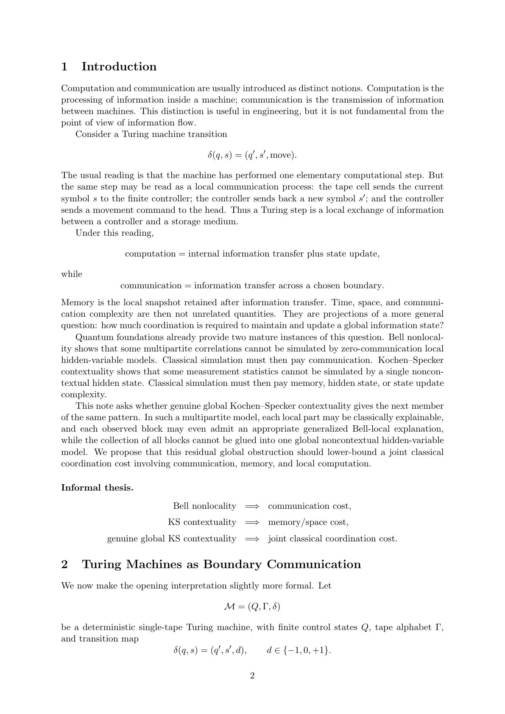
<figcaption class="paper-figure-caption"><b>Fig 1.</b> Low-resolution page preview, page 2</figcaption>
</figure>
<figure class="paper-figure-card">
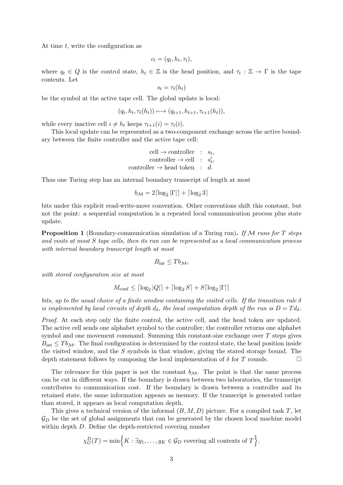
<figcaption class="paper-figure-caption"><b>Fig 2.</b> Low-resolution page preview, page 3</figcaption>
</figure>
<figure class="paper-figure-card">
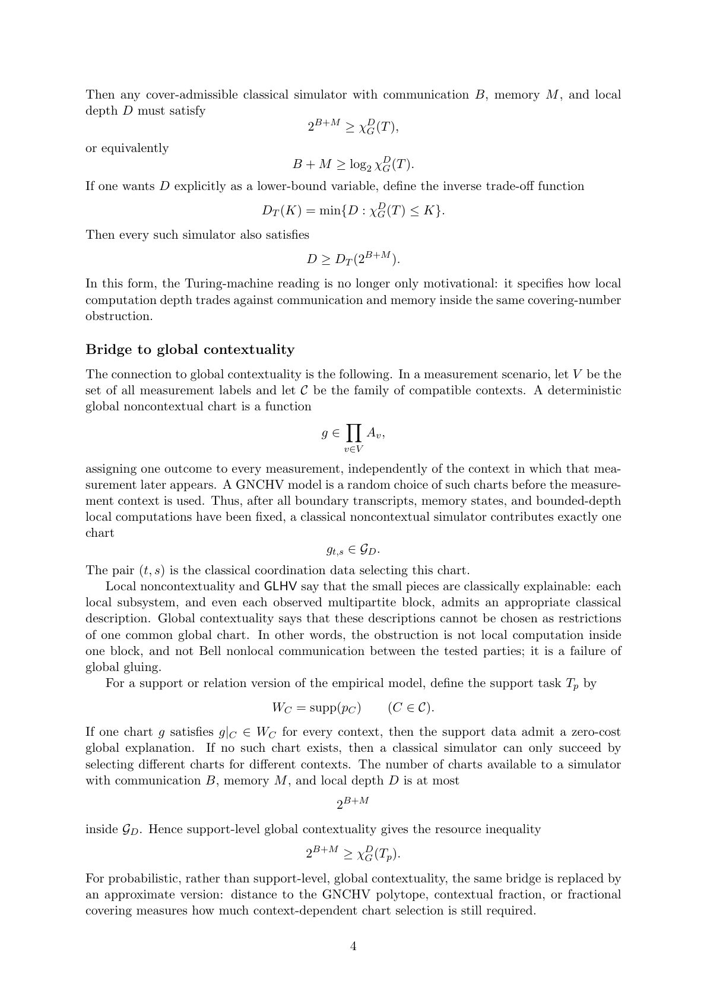
<figcaption class="paper-figure-caption"><b>Fig 3.</b> Low-resolution page preview, page 4</figcaption>
</figure>
<figure class="paper-figure-card">
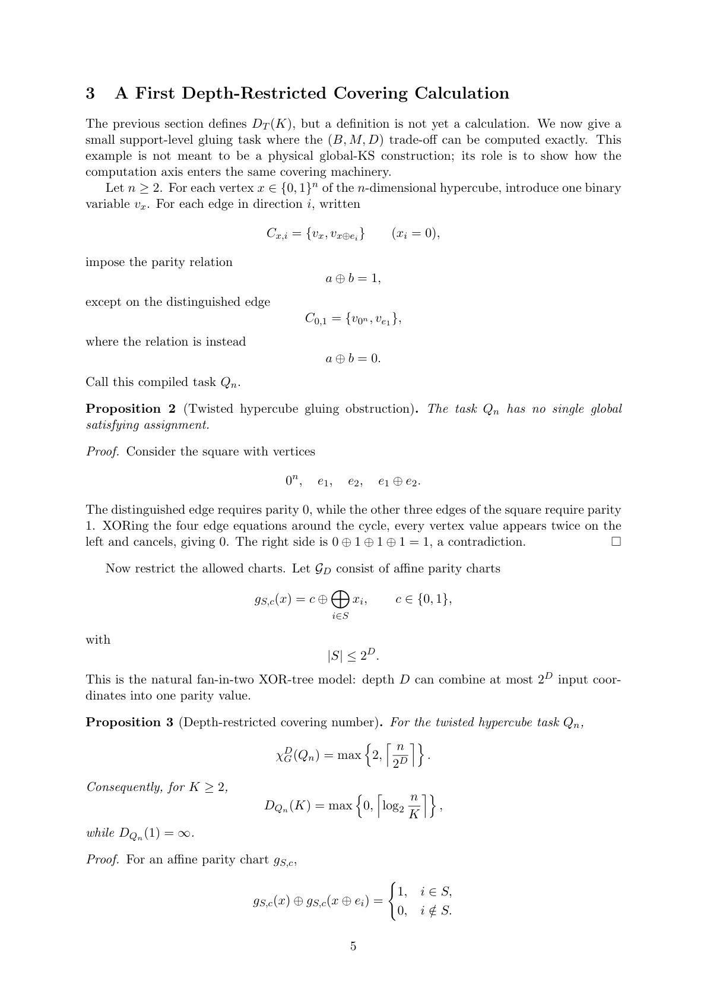
<figcaption class="paper-figure-caption"><b>Fig 4.</b> Low-resolution page preview, page 5</figcaption>
</figure>
<figure class="paper-figure-card">
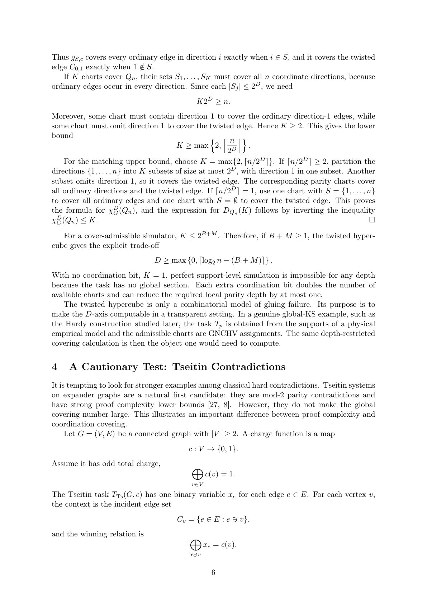
<figcaption class="paper-figure-caption"><b>Fig 5.</b> Low-resolution page preview, page 6</figcaption>
</figure>
</div>

<p><strong>Summary.</strong> This work develops a comprehensive framework to measure genuine global contextuality using 'coordination costs,' quantifying the minimum required classical communication and memory. By relating this cost to combinatorial covering numbers ($\chi_G$), it establishes that strong quantum contextuality imposes unavoidable lower bounds on any classical simulation protocol. This advances the understanding of resource separation between quantum and classical physics.</p>
<p><strong>Why it may be interesting.</strong> It provides a rigorous theoretical tool—the coordination cost—to quantify the computational resources needed by classical simulators to mimic quantum correlations, which is fundamental for understanding resource limitations in quantum computation and communication protocols.</p>
<details>
<summary>Detailed structure</summary>
<p><strong>Main problem.</strong> To establish a quantitative link between genuine global Kochen-Specker (KS) contextuality and the minimum classical coordination cost required to simulate quantum correlations.</p>
<p><strong>Main result.</strong> The paper proves that genuine global KS contextuality lower-bounds a joint classical coordination cost involving communication, memory, and local computation depth ($B+M \ge \log_2 \chi_G(T)$).</p>
<p><strong>Method.</strong> It develops an abstract framework using compiled task models and resource inequalities derived from covering numbers ($\chi_D^G$) to quantify the required classical resources.</p>
<p><strong>Model / system.</strong> The analysis uses abstract information-theoretic models, generalizing Bell nonlocality (communication cost) and KS contextuality into a joint coordination cost for arbitrary constraint satisfaction tasks.</p>
<p><strong>Key observables.</strong> Global contextual covering number ($\chi_G(T)$), depth-restricted covering number ($\chi_D^G(T)$), and the classical resource tuple $(B, M, D)$.</p>
<p><strong>Important parameters / regimes.</strong> Coordination bits (the common unit of cost), repetition factor ($m$), and flag probabilities ($p_{F,n}$).</p>
<p><strong>Assumptions / limitations.</strong> The analysis relies on defining a 'cover-admissible' classical simulator model and assumes the existence of an abstract lifting theorem to transfer bounds from simple KS seeds to global models.</p>
<p><strong>Figures summary.</strong> Not specified (Notes describe mathematical theorems and derived inequalities rather than figure content).</p>
<p><strong>Paper structure.</strong> The paper builds logically by first defining the resource cost framework, then introducing specific combinatorial tasks (like twisted hypercubes or Hardy games) to derive concrete lower bounds on $\chi_G(T)$, culminating in an abstract theorem that transfers these bounds from simple contextuality seeds to genuinely global models.</p>
</details>
<details>
<summary>Abstract</summary>
<p>Classical simulations of quantum correlations can fail because no low-communication local hidden-variable model exists, or because no single noncontextual hidden state can explain all compatible measurement contexts. This manuscript studies a third regime: genuine global Kochen-Specker contextuality, where local subsystems are noncontextual and the tested multipartite blocks are generalized-Bell-local, but the whole empirical model admits no global noncontextual hidden-variable explanation. We propose a coordination-cost framework in which communication, memory, and local computation are treated as different ways for a classical simulator to maintain a global classical explanation from locally available information. We introduce coordination bits, global contextual covering numbers, scaling laws for task families, and an abstract lifting theorem showing how classical simulation lower bounds for KS-contextual seed families can be transferred to genuinely global-KS models. As worked examples, we analyze a polarization-path Hardy obstruction and postselected KCBS-type tasks.</p>
</details>
<p><sub><a href="#top">↑ back to top</a></sub></p>

<p><a id="paper-2606.22194"></a></p>
<h3 id="machine-learning-optimal-quantum-error-correction-thresholds"><a href="http://arxiv.org/abs/2606.22194v1">Machine Learning Optimal Quantum Error Correction Thresholds</a></h3>
<p><strong>Authors:</strong> Dominik Seip, Luis Colmenarez, Markus Schmitt, Markus Müller<br>
<strong>Type:</strong> theory · <strong>Category:</strong> quantum information and computing · <strong>PDF:</strong> <a href="https://arxiv.org/pdf/2606.22194v1">https://arxiv.org/pdf/2606.22194v1</a><br>
<strong>Analysis basis:</strong> full PDF text, analyzed in chunks
<strong>Topic relevance:</strong> <code>entanglement &amp; information structure</code> <strong>2/5</strong> · <code>methods for driven-dissipative</code> <strong>1/5</strong></p>
<div class="figure-strip-hint">↔ Scroll figures horizontally</div>
<div class="paper-figures-scroll">
<figure class="paper-figure-card">
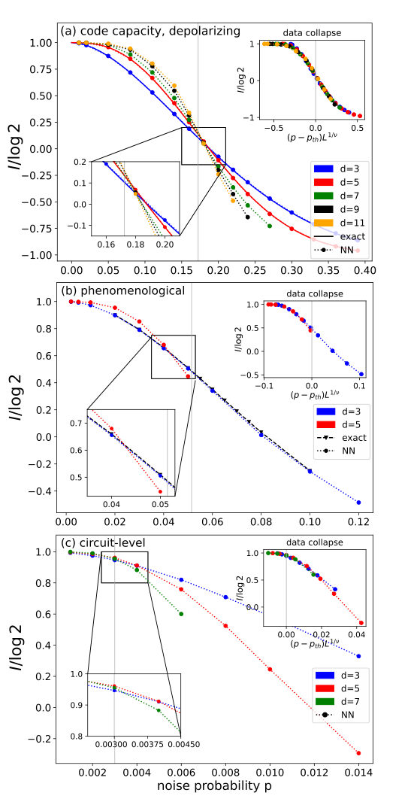
<figcaption class="paper-figure-caption"><b>Fig 1.</b> FIG. 1: Estimates of the CI obtained using our transformer- based model. We show (a) depolarizing noise in the code capacity setting, (b) phenomenological noise, and (c) circuit- level noise. Each dot corresponds to a single network trained at the particular noise probability. The threshold is marked by a grey vertical line and is either obtained by a finite-size scaling analysis or by the crossing of the CI. (a) The solid lines show the analytically obtained CI by computing p(λ|s) and p(s) exactly across a densely sampled range of noise values, whereas the markers only indicate selected individual noise values, while (b) the black dots show the numerical value of the CI, obtained following...</figcaption>
</figure>
<figure class="paper-figure-card">

<figcaption class="paper-figure-caption"><b>Fig 2.</b> FIG. 2: Noisy X-type stabilizer readout circuits with error locations marked by colored boxes. (a) Phenomenological noise: a depolarizing channel (pink) is applied to all data qubits before readout; measurement errors are modeled via a bit-flip channel (green). All gates are assumed noiseless. (b) Circuit-level noise: idling data qubits decohere during ancilla initialization and measurement (pink); single- and two-qubit gates are followed by depolarizing channels (red). Measurement errors are again modeled via bit-flip channels. Idling errors during the execution of Hadamard- and CNOT-gate are not included. A specific gate ordering must be chosen based on the code layout to ensure fault...</figcaption>
</figure>
<figure class="paper-figure-card">

<figcaption class="paper-figure-caption"><b>Fig 3.</b> FIG. 3: Setup for the CI in the context of QEC. A noiseless reference qubit (R) is entangled with another qubit, which is then encoded by Uenc into a logical qubit (Q). This creates an equal superposition (|0R0L⟩+ |1R1L⟩)/ √</figcaption>
</figure>
<figure class="paper-figure-card">

<figcaption class="paper-figure-caption"><b>Fig 4.</b> FIG. 4: STL-decomposition of an error chain E (left) into stabilizer S (middle left), pure error T (middle right), and logical operator L (right) on the surface code. Erroneous data qubits are marked by red dots. The excited stabilizers are marked by blue dots. Non-transparent plaquettes represent the stabilizer components of S. The pure error T excites the syndrome but commutes with all stabilizers and logicals. The logical operator L is chosen as the logical operator of maximal support, applying a Pauli operator to each data qubit. Adapted from Ref. [78].</figcaption>
</figure>
<figure class="paper-figure-card">

<figcaption class="paper-figure-caption"><b>Fig 5.</b> FIG. 5: Circuit for estimating conditional logical probabilities p(λ|s). A noiseless reference qubit R is prepared in a Bell pair with a physical qubit, which is subsequently encoded into a logical qubit, forming the entangled state 1 √</figcaption>
</figure>
</div>

<p><strong>Summary.</strong> The paper introduces using transformer neural networks to estimate the Coherent Information (CI), which serves as a theoretical upper bound on reliable quantum information transfer. By linking CI maximization to minimizing BCE loss, they create a powerful ML tool for estimating QEC thresholds. This approach significantly improves upon classical decoders and rigorously proves the optimality of advanced soft post-selection techniques.</p>
<p><strong>Why it may be interesting.</strong> This work provides a powerful ML framework to tackle fundamental limits in quantum computation, offering quantitative tools (CI) that bridge information theory with practical decoder design for noisy qubits.</p>
<details>
<summary>Detailed structure</summary>
<p><strong>Main problem.</strong> Determining optimal quantum error correction (QEC) thresholds is computationally hard due to noise susceptibility, requiring methods to quantify the maximum reliable information transfer rate.</p>
<p><strong>Main result.</strong> The authors show that transformer-based neural networks can accurately estimate the Coherent Information (CI), providing superior threshold estimates and outperforming traditional decoders like MWPM.</p>
<p><strong>Method.</strong> They develop a transformer model trained using Binary Cross-Entropy loss, establishing a direct link between this loss and the CI. They also introduce novel optimal soft post-selection schemes based on MLD cosets.</p>
<p><strong>Model / system.</strong> The study focuses on QEC codes, particularly the surface code, analyzing performance under various noise models (depolarizing, phenomenological, circuit-level). The core mathematical tool is the Coherent Information (CI), which quantifies recoverable information.</p>
<p><strong>Key observables.</strong> Coherent Information (CI), Logical Error Rate ($p_L$), Abort Probability ($p_{	ext{abort}}$), and Noise Thresholds.</p>
<p><strong>Important parameters / regimes.</strong> Code distance ($d$), noise strength ($p$), and the post-selection parameter ($c$).</p>
<p><strong>Assumptions / limitations.</strong> The analysis relies on establishing that minimizing BCE loss approximates maximizing CI, and that optimal post-selection is governed by MLD cosets.</p>
<p><strong>Figures summary.</strong> Figures illustrate CI estimates showing threshold crossings across different noise types; other figures detail the QEC circuit setups (e.g., X/Z readout) and compare error rate scaling between various decoding strategies.</p>
<p><strong>Paper structure.</strong> The paper progresses by first establishing the theoretical link between CI and BCE loss, then developing the transformer architecture for estimation, followed by proving the optimality of MLD-based soft post-selection schemes, and finally benchmarking performance across multiple noise models.</p>
</details>
<details>
<summary>Abstract</summary>
<p>As quantum computers remain susceptible to noise, QEC is essential for preserving logical information during computations. However, the performance of QEC codes breaks down beyond certain noise thresholds, revealing fundamental limits on their ability to protect quantum information. These limits can be characterized using information-theoretic measures such as the coherent information, which quantifies the maximum rate at which logical information can be reliably transmitted through a noisy quantum channel. In this work, we establish a direct connection between the CI and the binary cross-entropy loss used when training neural network decoders. Specifically, we show that the CI constitutes a sharp lower bound on the achievable loss for decoders that track logical operators across noisy channels. To this end, we develop a transformer-based neural network model based on maximum likelihood decoding. We train this network to estimate the CI and evaluate its performance on the surface code under three noise models: code capacity, phenomenological, and circuit-level noise. Our results demonstrate that the network accurately predicts CI and yields threshold estimates that closely match known theoretical limits. When used as a decoder, the network significantly outperforms the minimum weight perfect matching decoder in terms of logical error rate. We also introduce a novel soft post-selection scheme that independently treats uncertainty in both logical operators and relies on confidence-based filtering of the network's output. We prove that such post-selection strategies, based on the MLD cosets, are optimal, and demonstrate their scalability in terms of both logical error rate and abort probability. These findings establish transformer-based architectures as powerful tools for QEC and provide the first numerical evidence supporting the optimality and scalability of MLD-based post-selection.</p>
</details>
<p><sub><a href="#top">↑ back to top</a></sub></p>

<p><a id="paper-2606.22316"></a></p>
<h3 id="making-quantum-networks-work-routing-calibration-and-programmable-quantum-repeaters"><a href="http://arxiv.org/abs/2606.22316v1">Making Quantum Networks Work: Routing, Calibration, and Programmable Quantum Repeaters</a></h3>
<p><strong>Authors:</strong> Vinay Kumar<br>
<strong>Type:</strong> theory · <strong>Category:</strong> quantum information and computing · <strong>PDF:</strong> <a href="https://arxiv.org/pdf/2606.22316v1">https://arxiv.org/pdf/2606.22316v1</a><br>
<strong>Analysis basis:</strong> full PDF text, analyzed in chunks
<strong>Topic relevance:</strong> <code>QC/QI experiment</code> <strong>2/5</strong> · <code>quantum measurements</code> <strong>1/5</strong></p>
<div class="figure-strip-hint">↔ Scroll figures horizontally</div>
<div class="paper-figures-scroll">
<figure class="paper-figure-card">

<figcaption class="paper-figure-caption"><b>Fig 1.</b> Figure 2.1: Examples of different types of entanglement. a) a bipartite entangled state depicted by the Bell state; b) two forms of tripartite entanglement, one following the GHZ state and the other the W state; c) a bipartite hyperentanglement in two degrees of freedom, combining polarisation and spatial modes (taken from [3])</figcaption>
</figure>
<figure class="paper-figure-card">

<figcaption class="paper-figure-caption"><b>Fig 2.</b> Figure 2.2: a) Teleportation: Teleportation of Alice’s qubit 𝐴1 from state |Ψ⟩0 to Bob’s qubit 𝐵(yielding state |Ψ⟩with fidelity |⟨Ψ0|Ψ⟩|2) is achieved via a Bell state measurement on qubits 𝐴1 and 𝐴2. Alice then communicates the resulting classical bits (𝑚0𝐴and 𝑚1𝐴) to Bob, who applies the appropriate quantum operations on 𝐵based on these outcomes. b) Entanglement Swapping: Entanglement swapping between Alice and Bob is achieved by converting two bipartite entangled pairs—one between Alice and repeater 𝑅𝑥(qubits 𝐴and 𝑅𝑥1) and one between repeater 𝑅𝑥and Bob (qubits 𝑅𝑥2 and 𝐵)—into a direct (end-to-end) entanglement between Alice and Bob (qubits 𝐴and 𝐵). This process is executed by...</figcaption>
</figure>
<figure class="paper-figure-card">

<figcaption class="paper-figure-caption"><b>Fig 3.</b> Figure 2.3: Using extra qubit resources to boost error resilience. a) Entanglement purification: Each EPR pair is paired with an additional, sacrificial EPR pair to enhance its fidelity (modified from [5]); b) Quantum error correction: Each EPR pair is supported by extra qubits arranged as encoded EPR pairs to reduce the error rate (modified from [44])</figcaption>
</figure>
<figure class="paper-figure-card">

<figcaption class="paper-figure-caption"><b>Fig 4.</b> Figure 2.4: Entanglement generation schemes. a) MeetInTheMiddle: Each of two distant stations holds one half of an EPR pair. The entangled qubits are sent to an intermediate station, where entanglement swapping establishes a direct end-to-end entanglement between the remote stations; b) SenderRecever: An entangled qubit generated at the source station is transmitted to the destination station. Here, entanglement swapping between this qubit and one from the destination’s EPR pair creates a direct entanglement link between the stations; c) MidPointSource: An intermediate station produces an EPR pair and sends one qubit to the source station and the other to the destination station. At each...</figcaption>
</figure>
<figure class="paper-figure-card">

<figcaption class="paper-figure-caption"><b>Fig 5.</b> Figure 2.5: A schematic of the global quantum internet.</figcaption>
</figure>
</div>

<p><strong>Summary.</strong> This thesis addresses the complexity of building scalable quantum networks by integrating three previously separate domains: routing, link calibration, and hardware programmability. It develops a cross-layer framework that allows protocols to function reliably even with partial knowledge of imperfect physical links. The result is a comprehensive model for programmable quantum repeaters necessary for long-distance quantum communication.</p>
<p><strong>Why it may be interesting.</strong> It provides a comprehensive blueprint for realizing quantum internet infrastructure by explicitly linking high-level network protocols (routing) to low-level physical control mechanisms (ISA/calibration), which is crucial for experimental realization using solid-state qubits.</p>
<details>
<summary>Detailed structure</summary>
<p><strong>Main problem.</strong> The core challenge is designing scalable quantum networks by developing integrated protocols for routing, managing link imperfections via calibration, and implementing programmable hardware at the repeater nodes.</p>
<p><strong>Main result.</strong> The thesis proposes a cross-layer framework where grey-box routing achieves robustness using partial knowledge, while explicit calibration schedules and an Instruction Set Architecture (ISA) enable reliable operation despite hardware drift.</p>
<p><strong>Method.</strong> The work combines theoretical protocol development with architectural modeling, deriving optimal scheduling algorithms for link calibration and proposing a concrete ISA interface for physical quantum repeaters.</p>
<p><strong>Model / system.</strong> The system is a quantum network designed for long-distance entanglement distribution. It models components like qubits (e.g., NV centers), entanglement swapping operations, and the interaction between network protocols and underlying hardware control layers.</p>
<p><strong>Key observables.</strong> End to end fidelity ($\mathcal{F}_{	ext{ete}}$), Blocking Probability (BP), Throughput ($T$), and operational efficiency metrics.</p>
<p><strong>Important parameters / regimes.</strong> Link fidelity decay rate ($\Gamma_e$), calibration overhead time, network topology parameters, and the size/capability of the programmable node register.</p>
<p><strong>Assumptions / limitations.</strong> The research moves beyond assuming full or static knowledge of link properties, instead modeling partial knowledge and dynamic hardware limitations as fundamental constraints.</p>
<p><strong>Figures summary.</strong> Figures illustrate entanglement generation schemes (MeetInTheMiddle, Sender-Receiver), network topologies (Grid/Cylindrical), and performance comparisons showing how BP and Fidelity vary with node quality ($\xi$) under different routing algorithms.</p>
<p><strong>Paper structure.</strong> The paper progresses by first establishing the need for a cross-layer view; it then details routing strategies using grey-box approaches, followed by developing calibration-aware models for link operation, culminating in the proposal of an ISA for programmable repeater nodes.</p>
</details>
<details>
<summary>Abstract</summary>
<p>The quantum internet enables distribution of quantum states across distant nodes, supporting secure communication, distributed computing, and quantum sensing. Unlike classical networks, it is constrained by the no cloning theorem, probabilistic entanglement generation, decoherence, and hardware drift, making classical abstractions inadequate. Scalable quantum networking therefore requires new architectures, protocols, and optimisation methods that explicitly account for these limitations.   This thesis studies the architecture, routing, and operation of quantum networks under realistic constraints, focusing on bipartite entanglement distribution over quantum repeater networks. Key metrics include end to end fidelity, throughput, scalability, and fairness. At the network layer, routing strategies are developed beyond assumptions of homogeneous nodes and full network knowledge. Routing under heterogeneous repeater efficiencies shows how partial knowledge of node quality improves fidelity and reduces path blocking. A grey box routing approach is then introduced, where path selection relies only on topology and end to end estimates, achieving robustness and fairness without detailed link information.   At the link layer, calibration and hardware drift are addressed through a calibration aware model separating activation and calibration phases. For linear repeater chains, an optimal calibration schedule is derived to balance operation time and calibration overhead. This is extended to general topologies with shared links, where a greedy orchestration heuristic is proposed.   Finally, the thesis connects network protocols with hardware via an instruction set architecture for programmable quantum repeater nodes based on NV centers, enabling coherent programmability and linking physical operations to higher layer protocols.</p>
</details>
<p><sub><a href="#top">↑ back to top</a></sub></p>

<p><a id="paper-2606.23592"></a></p>
<h3 id="random-dimension-reduction-and-learning-symmetric-properties-of-quantum-states"><a href="http://arxiv.org/abs/2606.23592v1">Random dimension reduction and learning symmetric properties of quantum states</a></h3>
<p><strong>Authors:</strong> Angus Lowe, Xinyu Tan<br>
<strong>Type:</strong> theory · <strong>Category:</strong> quantum information and computing · <strong>PDF:</strong> <a href="https://arxiv.org/pdf/2606.23592v1">https://arxiv.org/pdf/2606.23592v1</a><br>
<strong>Analysis basis:</strong> full PDF text, analyzed in chunks
<strong>Topic relevance:</strong> <code>entanglement &amp; information structure</code> <strong>2/5</strong> · <code>methods for driven-dissipative</code> <strong>1/5</strong></p>
<div class="figure-strip-hint">↔ Scroll figures horizontally</div>
<div class="paper-figures-scroll">
<figure class="paper-figure-card">

<figcaption class="paper-figure-caption"><b>Fig 1.</b> Low-resolution page preview, page 2</figcaption>
</figure>
<figure class="paper-figure-card">

<figcaption class="paper-figure-caption"><b>Fig 2.</b> Low-resolution page preview, page 3</figcaption>
</figure>
<figure class="paper-figure-card">

<figcaption class="paper-figure-caption"><b>Fig 3.</b> Low-resolution page preview, page 4</figcaption>
</figure>
<figure class="paper-figure-card">

<figcaption class="paper-figure-caption"><b>Fig 4.</b> Low-resolution page preview, page 5</figcaption>
</figure>
<figure class="paper-figure-card">

<figcaption class="paper-figure-caption"><b>Fig 5.</b> Low-resolution page preview, page 6</figcaption>
</figure>
</div>

<p><strong>Summary.</strong> This paper introduces random dimension reduction, a technique that efficiently reduces the effective dimensionality of multiple quantum states while preserving key symmetric properties. It demonstrates this method improves the sample complexity bounds for estimating various quantum distances and fidelities between states. The work also rigorously distinguishes this procedure from related concepts like random purification channels.</p>
<p><strong>Why it may be interesting.</strong> It provides a powerful, dimension-independent tool (random dimension reduction) to analyze resource estimation tasks in quantum information theory, which is crucial for designing practical quantum protocols.</p>
<details>
<summary>Detailed structure</summary>
<p><strong>Main problem.</strong> The paper develops a method called random dimension reduction to simultaneously reduce the dimensions of multiple quantum states while preserving properties invariant under the tensor power action of an isometry.</p>
<p><strong>Main result.</strong> This procedure provides a black-box way to improve sample complexity for learning symmetric properties of quantum states, yielding improved upper bounds compared to prior methods.</p>
<p><strong>Method.</strong> The core method involves defining and implementing the Random Dimension Reduction (RTP) channel using Haar-random unitaries and relating it mathematically to random purification channels via the Choi–Jamiołkowski isomorphism.</p>
<p><strong>Model / system.</strong> The study concerns quantum states ($
ho, \sigma$) in potentially high ambient dimensions ($d$), which are analyzed by reducing them to lower effective dimensions ($k$). The analysis uses tensor products of these states and relies heavily on tools from representation theory like the Schur transform.</p>
<p><strong>Key observables.</strong> Symmetric properties between pairs of quantum states, including trace distance, fidelity, relative entropies (e.g., $\alpha$-Tsallis), and Hellinger distance.</p>
<p><strong>Important parameters / regimes.</strong> The maximum rank ($r$) of the input states, the ambient dimension ($d$), the number of copies ($n$), and the desired accuracy ($\epsilon$ or $\delta$).</p>
<p><strong>Assumptions / limitations.</strong> The analysis assumes continuity for the properties being estimated and establishes that random dimension reduction is related to but distinct from random purification channels.</p>
<p><strong>Figures summary.</strong> Table 1 compares sample complexity upper bounds for various symmetric properties, showing improvements achieved by using dimension reduction combined with full state tomography.</p>
<p><strong>Paper structure.</strong> The paper progresses by first establishing the existence and implementability of the RTP channel (Theorem 1.1), applying it to improve sample complexity bounds for estimating quantum distances, then detailing its connection to random purification channels via the Choi-Jamiołkowski isomorphism, and finally proving that these two processes are distinct in general.</p>
</details>
<details>
<summary>Abstract</summary>
<p>We introduce a procedure called random dimension reduction that simultaneously reduces the dimensions of many, potentially distinct quantum states while preserving properties invariant under the tensor power action of an isometry. This provides a black-box method to replace the dimension with the maximum rank in the sample complexity of learning symmetric properties, even those depending on multiple input states. We show that dimension reduction followed by full state tomography yields improved upper bounds for estimating distances, fidelities, and relative entropies between pairs of states. We also give an efficient quantum circuit implementation of the procedure using the Schur transform.   Expressing the action of our procedure through the Choi-Jamiolkowski isomorphism reveals an intimate connection with the recently introduced random purification channel by Tang, Wright, and Zhandry. This perspective also completes an end-to-end analysis of sample-optimal tomography without requiring a reference to the Schur transform or Schur polynomials. Finally, we prove that there does not exist a random purification channel that simultaneously purifies copies of multiple, potentially different input states. Hence, random dimension reduction is related to, but distinct from, random purification.</p>
</details>
<p><sub><a href="#top">↑ back to top</a></sub></p>

<p><a id="paper-2606.23353"></a></p>
<h3 id="ultra-peripheral-collisions-as-a-nuclear-structure-interferometer-with-interpretable-multitask-deep-learning"><a href="http://arxiv.org/abs/2606.23353v1">Ultra-Peripheral Collisions as a Nuclear-Structure Interferometer with Interpretable Multitask Deep Learning</a></h3>
<p><strong>Authors:</strong> Jing-Zong Zhang, Wang-Mei Zha, Lingxiao Wang, Guo-Liang Ma<br>
<strong>Type:</strong> theory · <strong>Category:</strong> disordered systems and neural networks · <strong>PDF:</strong> <a href="https://arxiv.org/pdf/2606.23353v1">https://arxiv.org/pdf/2606.23353v1</a><br>
<strong>Analysis basis:</strong> full PDF text, analyzed in chunks
<strong>Topic relevance:</strong> <code>methods for driven-dissipative</code> <strong>2/5</strong> · <code>interference shaping light</code> <strong>1/5</strong></p>
<div class="figure-strip-hint">↔ Scroll figures horizontally</div>
<div class="paper-figures-scroll">
<figure class="paper-figure-card">

<figcaption class="paper-figure-caption"><b>Fig 1.</b> FIG. 1: (Color online) Nuclear interference tomography in ultra-peripheral collisions (UPCs). (a) Initial nuclear configurations with neutron skin and shape deformations. (b) The UPC system acting as a femtoscopic quantum interferometer with impact parameter b. (c) The resulting two-dimensional transverse momentum (p⊥) distribution of coherent J/ψ. (d) The deep-learning framework “AI- enhanced lens”) employed to reconstruct the initial nuclear-structure parameters from the final-state momentum image (e.g., neutron skin, quadrupole, and octupole).</figcaption>
</figure>
<figure class="paper-figure-card">

<figcaption class="paper-figure-caption"><b>Fig 2.</b> FIG. 2: (Color online) Transverse momentum distribution patterns of J/ψ photoproduction in Zr+Zr collisions at mid-rapidity (y = 0) with an impact parameter of b = 12 fm. Panel (a) shows the coherent contribution, characterized by dark interference fringes and bright diffraction spots, while panel (b) includes both coherent and incoherent processes.</figcaption>
</figure>
<figure class="paper-figure-card">

<figcaption class="paper-figure-caption"><b>Fig 3.</b> Figure 2 displays the simulated J/ψ photoproduction probability in the transverse momentum plane at mid-rapidity (y = 0) with b = 12 fm. Focusing on the coherent process in Fig. 2(a), within the transverse momentum range px, py ∈[−0.17, 0.17] GeV/c, the distribution exhibits a clear interference pattern characterized by a central dark fringe situated between a pair of bright spots. Experimental measurements are inherently contaminated by incoherent photoproduction, in which the photon inter- acts with an individual nucleon and breaks the coherence of the nucleus, often leading to nuclear dissociation. Unlike the coherent process, which acts as a slit-like interferometer, the incoherent...</figcaption>
</figure>
<figure class="paper-figure-card">

<figcaption class="paper-figure-caption"><b>Fig 4.</b> FIG. 3: Schematic of the Multitask deep-learning architecture. The pipeline accepts the two-dimensional transverse momentum distribution (Left) and processes it through a ResNet-34 backbone to extract geometric features. The Top row details the internal structure of a single Residual Block with a skip connection. The Bottom row shows the hierarchical feature extraction stages with increasing filter depths, leading to three task-specific heads (Right) for parameter regression and classification. Conv: Convolutional layer for local feature extraction. BN: Batch Normalization. ReLU: Non-linear activation function. MaxPool: Max pooling. Filters: Number of feature channels in each stage. H(x):...</figcaption>
</figure>
<figure class="paper-figure-card">

<figcaption class="paper-figure-caption"><b>Fig 5.</b> FIG. 4: (Color online) Two-dimensional histograms comparing model predictions with ground-truth values using coherent + incoherent input. The plots show the regression results for β2 (a) and β3 (b), and the confusion matrix for neutron-skin type classification (c).</figcaption>
</figure>
</div>

<p><strong>Summary.</strong> This work treats ultra-peripheral collisions as a quantum interferometer to probe subtle details of nuclear structure. It introduces an interpretable multitask deep learning model that analyzes the resulting transverse momentum distributions. This framework successfully disentangles overlapping signatures, allowing researchers to simultaneously constrain both nuclear shape deformation and neutron skin thickness.</p>
<p><strong>Why it may be interesting.</strong> The application of advanced ML techniques (multitask learning) to interpret complex quantum interference patterns in high-energy nuclear physics is a novel intersection between AI and fundamental structure determination, providing new tools for analyzing data from facilities like the LHC or EIC.</p>
<details>
<summary>Detailed structure</summary>
<p><strong>Main problem.</strong> Precisely determining nuclear structure parameters like shape deformation ($eta_2$) and neutron skin thickness is difficult because these signatures are entangled in classical scattering observables.</p>
<p><strong>Main result.</strong> The proposed interpretable Multitask deep-learning framework successfully disentangles the signals, allowing for simultaneous extraction of both quadrupole deformation and neutron-skin thickness from transverse momentum distributions.</p>
<p><strong>Method.</strong> A multitask deep learning model is trained on simulated 2D transverse momentum spectra to map complex interference patterns directly to multiple physical structure indicators.</p>
<p><strong>Model / system.</strong> The system uses Ultra-Peripheral Collisions (UPCs) as a femtoscopic interferometer, analyzing coherent vector-meson photoproduction ($J/\psi$) in heavy nuclei like $^{96}	ext{Zr}$. The physics is modeled using deformed Woods–Saxon profiles for the nuclear density.</p>
<p><strong>Key observables.</strong> Transverse momentum distributions ($rac{d^2P}{dp_x dp_y}$), which are analyzed to separate interference-dominated (deformation) and diffraction-dominated (neutron skin) information.</p>
<p><strong>Important parameters / regimes.</strong> Quadrupole deformation ($eta_2$), Octupole deformation ($eta_3$), Neutron Skin Type, Transverse Momentum ($p_\perp$).</p>
<p><strong>Assumptions / limitations.</strong> The method assumes that the deep learning framework can learn a nonlinear inverse mapping robust enough to overcome holographic degeneracy and detector smearing.</p>
<p><strong>Figures summary.</strong> Figures illustrate the process from nuclear structure input to UPC interference patterns in $p_\perp$ space, showing how dark fringes relate to deformation ($eta$) and bright spots relate to neutron skin. The model's attention maps (PDA) are used to localize these distinct physical signals.</p>
<p><strong>Paper structure.</strong> The paper establishes the physical problem using UPCs as interferometers; it details the theoretical framework linking nuclear structure to $p_\perp$ spectra; it introduces the multitask deep learning architecture; and finally, it demonstrates parameter extraction robustness against background noise by mapping results back to measurable flow coefficients ($v_n$) and yield ratios.</p>
</details>
<details>
<summary>Abstract</summary>
<p>Precise knowledge of nuclear structure is essential across fundamental physics, yet probing these structures is notoriously difficult. To address this challenge, ultra-peripheral collisions (UPCs) provide a femtoscopic tomography for imaging the atomic nucleus. UPCs offer a pristine electromagnetic pathway: coherent vector-meson photoproduction generates patterns of diffraction and two-source interference that directly encode the nuclear spatial density. Turning these patterns into quantitative constraints is, however, a challenging inverse problem, complicated by correlated sensitivities to deformation and neutron skin, phase smearing, and experimental backgrounds. Here we introduce an interpretable Multitask deep-learning framework that maps transverse momentum distributions to multiple nuclear-structure indicators simultaneously and identifies the kinematic regions driving each inference. We demonstrate the approach with coherent $J/ψ$ photoproduction in $^{96}_{40}\text{Zr} + ^{96}_{40}\text{Zr}$ collisions, showing that the learned features separate diffraction-dominated and interference-dominated information and provide analysis-ready observables for future high-luminosity data.</p>
</details>
<p><sub><a href="#top">↑ back to top</a></sub></p>

<p><a id="paper-2606.22853"></a></p>
<h3 id="bunny-codes-broadening-superconducting-quantum-error-correction-capability-through-advanced-control-engineering"><a href="http://arxiv.org/abs/2606.22853v1">Bunny Codes: Broadening Superconducting Quantum Error Correction Capability through Advanced Control Engineering</a></h3>
<p><strong>Authors:</strong> Runshi Zhou, Xingye Yuan, Linghang Kong, Fang Zhang, Kai Zhang, Zhaohui Yang, Jianxin Chen<br>
<strong>Type:</strong> theory · <strong>Category:</strong> quantum information and computing · <strong>PDF:</strong> <a href="https://arxiv.org/pdf/2606.22853v1">https://arxiv.org/pdf/2606.22853v1</a><br>
<strong>Analysis basis:</strong> full PDF text, analyzed in chunks
<strong>Topic relevance:</strong> <code>QC/QI experiment</code> <strong>2/5</strong></p>
<div class="figure-strip-hint">↔ Scroll figures horizontally</div>
<div class="paper-figures-scroll">
<figure class="paper-figure-card">

<figcaption class="paper-figure-caption"><b>Fig 1.</b> Figure 2: (a) An example of basic units on a hardware with hexagonal connectiv- ity in the dashed box, where circles indicate qubits and solid lines between circles are couplers connecting the two qubits. The qubits are labeled by their posi- tions in the Cartesian coordinate. (b) The hardware connectivity constructed from basic hexagonal units. Each dashed box is a basic unit that repeats on the rectangle with l = 4 and m = 2.</figcaption>
</figure>
<figure class="paper-figure-card">

<figcaption class="paper-figure-caption"><b>Fig 2.</b> Figure 5: The parallelized syndrome extraction circuit constructed from the sequence of actions in Table 1, shown on a torus of size l = 3, m = 2 with hexagonal connectivity. We focus specifically on the Pauli operator measured by the X-ancilla qubit highlighted in the red box. The left (right) data qubits included in that stabilizer are highlighted in green (orange) circles, and their displacements, together with those of the corresponding sub-lattice, are tracked over the circuit.</figcaption>
</figure>
<figure class="paper-figure-card">

<figcaption class="paper-figure-caption"><b>Fig 3.</b> Figure 8: Highest code rates achieved for quantum error correction codes found with different connectivities topologies under periodic boundary conditions. The hatched region correspond to the code distance, while the solid part correspond to the circuit-level distance. Circuit-level distances are only calculated for codes with code distances up to 5. (a) Hexagons. (b) Squares.</figcaption>
</figure>
<figure class="paper-figure-card">

<figcaption class="paper-figure-caption"><b>Fig 4.</b> Figure 10: The logical error rate per round per logical qubit for some representa- tive Bunny codes under periodic boundary conditions. (a) Weight-4 stabilizers. (b) Weight-5 stabilizers. (c) Weight-6 stabilizers.</figcaption>
</figure>
<figure class="paper-figure-card">

<figcaption class="paper-figure-caption"><b>Fig 5.</b> Figure 11: Highest code rates achieved for quantum error correction codes with different connectivities under open boundary conditions. (a) Hexagons. (b) Squares.</figcaption>
</figure>
</div>

<p><strong>Summary.</strong> The paper proposes 'Bunny codes' to advance superconducting Quantum Error Correction by leveraging an expanded native two-qubit gate set (CNOT and CXSWAP). Through systematic circuit construction and simulation, they demonstrate that these codes achieve superior code rates and lower logical error rates compared to established codes like the Toric code. This work proves that high performance can be achieved through smarter control engineering rather than requiring complex physical hardware modifications.</p>
<p><strong>Why it may be interesting.</strong> This work is highly relevant as it directly addresses hardware constraints in quantum computing. By showing that gate set expansion can bypass complex physical wiring (long-range couplers), it offers a more scalable path toward fault-tolerant computation, which is crucial for realizing large-scale quantum processors.</p>
<details>
<summary>Detailed structure</summary>
<p><strong>Main problem.</strong> The primary challenge is achieving high-performance Quantum Error Correction (QEC) on superconducting qubits while overcoming limitations imposed by restricted physical qubit connectivity and the need to avoid complex, long-range couplers.</p>
<p><strong>Main result.</strong> The authors introduce 'Bunny codes,' which utilize an expanded native gate set (CNOT and CXSWAP) to achieve significantly higher code rates ($\sim 3	imes$ Toric code rate in periodic boundaries) and lower logical error rates compared to standard surface codes, all while maintaining local connectivity.</p>
<p><strong>Method.</strong> The approach involves a bottom-up search strategy on 2D lattices, exhaustively constructing syndrome extraction circuits by tracking qubit displacements caused by sequential application of CNOT/CXSWAP gates. These verified circuits are then used to calculate code parameters and simulate logical error rates.</p>
<p><strong>Model / system.</strong> The system is superconducting qubits arranged on a 2D planar grid (e.g., square or hexagonal lattice). The model relies on the assumption that the hardware natively supports an enlarged two-qubit gate set, specifically CNOT and CXSWAP gates.</p>
<p><strong>Key observables.</strong> Code rate, logical error rates ($\epsilon$), code distance ($d$), and required qubit connectivity/stabilizer weights.</p>
<p><strong>Important parameters / regimes.</strong> Stabilizer weights (e.g., weight-6), lattice size ($l 	imes m$), physical error rate ($\epsilon$), and the ratio of achievable code rate to that of the Toric or Surface codes.</p>
<p><strong>Assumptions / limitations.</strong> The hardware supports CNOT and CXSWAP gates with equivalent gate duration, allowing for syndrome extraction without long-range couplers. Translational symmetry is assumed during the construction phase.</p>
<p><strong>Figures summary.</strong> Figures illustrate lattice setups (surface/hexagonal), basic unit structures showing qubit labeling and couplers, examples of syndrome extraction circuits tracking sub-lattice displacements, and final comparisons of code rates and logical error rates for various codes under periodic and open boundary conditions.</p>
<p><strong>Paper structure.</strong> The paper systematically develops a method to map physical gate actions (CNOT/CXSWAP) onto mathematical qubit displacement vectors. It then uses this framework to search for high-rate qLDPC codes, rigorously verifies the syndrome extraction circuits via commutation checks, and finally evaluates performance metrics like code rate and logical error rates on various lattice geometries.</p>
</details>
<details>
<summary>Abstract</summary>
<p>Drawing on advances in superconducting qubit control schemes that unlock enriched native gate sets at the hardware level, we systematically examine how harnessing this enlarged physical two-qubit gate pool -- specifically CNOT and CXSWAP -- streamlines syndrome extraction for certain qLDPC codes with nonlocal stabilizers. Through an exhaustive search, we discover a set of qLDPC codes with various stabilizer weights and distances that can be implemented on the two-dimensional nearest-neighbor qubit connectivity native to superconducting hardware while achieving performance equivalent to that of the direct CNOT implementation requiring long-range interactions. We refer to those codes as Bunny codes. Across all code distances we examine, the best Bunny codes with weight-6 stabilizers in periodic boundary conditions have a code rate approximately $3\times$ that of the toric code; when converted to open boundary conditions, they retain an approximately $2\times$ code rate advantage over the rotated surface code. In circuit-level simulation, we find that some Bunny codes exhibit logical error rates an order of magnitude lower than toric codes with comparable code rates. Our results demonstrate that high-performance quantum error correction can be achieved using an expanded gate set rather than long-range couplers, thereby significantly reducing hardware complexity.</p>
</details>
<p><sub><a href="#top">↑ back to top</a></sub></p>

<p><a id="paper-2606.21899"></a></p>
<h3 id="shuttling-in-bidimensional-segmented-ion-trap-quantum-processors-with-t-junctions"><a href="http://arxiv.org/abs/2606.21899v1">Shuttling in Bidimensional Segmented Ion-Trap Quantum Processors with T-Junctions</a></h3>
<p><strong>Authors:</strong> J. Durandau, C. A. Brunet, F. Schmidt-Kaler, U. Poschinger, F. Mailhot, Y. Bérubé-Lauzière<br>
<strong>Type:</strong> theory · <strong>Category:</strong> other · <strong>PDF:</strong> <a href="https://arxiv.org/pdf/2606.21899v1">https://arxiv.org/pdf/2606.21899v1</a><br>
<strong>Analysis basis:</strong> full PDF text, analyzed in chunks
<strong>Topic relevance:</strong> <code>QC/QI experiment</code> <strong>2/5</strong></p>
<div class="figure-strip-hint">↔ Scroll figures horizontally</div>
<div class="paper-figures-scroll">
<figure class="paper-figure-card">

<figcaption class="paper-figure-caption"><b>Fig 1.</b> Fig. 1: Illustration of the exchange of ions in a reservoir architecture between the two green crystals with K −1 crystals overall present in the trap. (a) Initial position of crystals. (b) The top green crystal is sent to branch C of the reservoir; the rest of the crystal chain moves up to just below the reservoir in branch B. (c) The K −2 blue crystals are sent to branch A and the bottom green crystal is sent to the LIZ. (d) The top green crystal is sent to branch B and then to the LIZ for ion swap. Both crystals are now adjacent, the junction cost is (K −2)CAB + 2CBC.</figcaption>
</figure>
<figure class="paper-figure-card">

<figcaption class="paper-figure-caption"><b>Fig 2.</b> Fig. 2: Circuit fit for a Shift circuit as a function of the number of ions for different values of λ (distance between LIZ and junction).</figcaption>
</figure>
<figure class="paper-figure-card">

<figcaption class="paper-figure-caption"><b>Fig 3.</b> Fig. 3: Simulation results for the circuit fit in a reservoir architecture with λ = 15 for (a) the QFT, (b) Carry, (c) Shift, (d) Adder, and (e) Comparator circuits. The green curve CIO-Uni is the circuit fit for a linear uni-LIZ architecture, serving as reference. J-2 and J-300 are bounding curves respectively corresponding to a junction cost of 2 and 300.</figcaption>
</figure>
<figure class="paper-figure-card">

<figcaption class="paper-figure-caption"><b>Fig 4.</b> Fig. 4: Comparison of the evolution of the circuit disor- ganization as shuttling proceeds in CIO-Uni and Reservoir architectures for the Carry circuit.</figcaption>
</figure>
<figure class="paper-figure-card">

<figcaption class="paper-figure-caption"><b>Fig 5.</b> Fig. 6: Circuit fit for a multi-LIZ reservoir architecture with λ = 5, and k = 12 compared with a linear multi-LIZ architecture (without reservoir) with k = 3. Note that for a linear multi-LIZ architecture, the smaller k is, the more efficient is the architecture, hence the choice for k = 3.</figcaption>
</figure>
</div>

<p><strong>Summary.</strong> This paper rigorously compares the efficiency of shuttling ions in 1D versus 2D segmented ion-trap quantum processors. By developing cost functions for various circuit building blocks, the authors prove that 2D architectures utilizing junctions significantly improve scalability over linear traps. The work culminates in proposing cell-based tiling strategies to guide the co-design of future large-scale quantum hardware.</p>
<p><strong>Why it may be interesting.</strong> This work directly addresses hardware constraints in trapped-ion quantum computing by providing quantitative metrics for architectural optimization based on physical movement costs, which is crucial for scaling up any ion trap system.</p>
<details>
<summary>Detailed structure</summary>
<p><strong>Main problem.</strong> The primary goal is optimizing quantum processor architectures by comparing the shuttling costs associated with implementing quantum circuits in linear versus two-dimensional segmented ion-trap systems.</p>
<p><strong>Main result.</strong> The study demonstrates that 2D architectures, especially those incorporating T-junctions and cell tiling, significantly outperform 1D linear traps for scaling up qubit counts at equivalent transport cost.</p>
<p><strong>Method.</strong> The authors introduce individual cost functions to quantify the total cost of implementing standard quantum building blocks (like QFT or Adders) in both 1D and 2D trap geometries.</p>
<p><strong>Model / system.</strong> The physical system is a shuttling-based trapped-ion quantum processor using segmented Paul traps. Architectures analyzed include linear chains, reservoir designs with T-junctions, Star, Tree, and planar Cell arrangements.</p>
<p><strong>Key observables.</strong> Circuit fit cost (Total cost / Number of gates), Circuit disorganization during shuttling, and the scaling ratio improvement between 1D and 2D architectures.</p>
<p><strong>Important parameters / regimes.</strong> Junction cost ($    ext{CAB}$), displacement costs, number of ions ($N$), depth ($d$) in Star/Tree geometries, and junction topology (T-, X-, Y-junctions).</p>
<p><strong>Assumptions / limitations.</strong> Assumptions include the symmetry of junction costs ($    ext{A-B} =  ext{B-A}$) and that the benefit of 2D structures is realized when junction costs are low relative to linear displacement costs.</p>
<p><strong>Figures summary.</strong> Figures compare circuit fit for various circuits across different architectures (e.g., QFT, Shift) and show how cost scales with depth ($d$) in Star geometries or how disorganization evolves between Reservoir and Linear designs.</p>
<p><strong>Paper structure.</strong> The paper progresses from establishing the limitations of 1D traps to introducing and analyzing 2D structures like reservoirs, then comparing advanced topologies (Star, Tree), and finally proposing cell-based tiling methods to achieve planar scalability.</p>
</details>
<details>
<summary>Abstract</summary>
<p>Shuttle-based trapped ion quantum processors typically employ a one-dimensional (1D) linear architecture to transport ion-qubits between one ore more laser interaction zones where the quantum gates are implemented, along with several qubit register storage segments. The two-dimensional (2D) quantum CCD architecture employs also T- or X-junctions for an improved scaling and efficiency. Here, we explore the shuttling layer in the compilation of quantum algorithm typical building blocks in such architecture. To weight the effort of linear shuttle and junction shuttle, we introduce individual cost functions for each operation. This allows comparing the total cost for quantum circuit building blocks such as the QFT, Carry, Adder, Shift, and Comparator circuits. We study their scaling properties with increased qubit numbers. At equivalent transport cost for junction and linear shuttling, we show that 2D architectures outperform the 1D linear trap with the ratio improving as the number of ions increases. Finally, we discuss the use of cells, such that the entire processor is constructed from a 2D array of such interconnected cells. The work aims to optimize quantum processor architectures, implementing a co-design that fits to the specific task and scaling up in a shuttle-efficient way.</p>
</details>
<p><sub><a href="#top">↑ back to top</a></sub></p>

<p><a id="paper-2606.22644"></a></p>
<h3 id="neural-polaron-learning-quasiparticle-operators-in-quantum-many-body-systems"><a href="http://arxiv.org/abs/2606.22644v1">Neural Polaron: Learning Quasiparticle Operators in Quantum Many-Body Systems</a></h3>
<p><strong>Authors:</strong> Shang-Shun Zhang<br>
<strong>Type:</strong> theory · <strong>Category:</strong> disordered systems and neural networks · <strong>PDF:</strong> <a href="https://arxiv.org/pdf/2606.22644v1">https://arxiv.org/pdf/2606.22644v1</a><br>
<strong>Analysis basis:</strong> full PDF text, analyzed in chunks
<strong>Topic relevance:</strong> <code>Keldysh / 2PI / non-Gaussian methods</code> <strong>1/5</strong> · <code>analog quantum simulation</code> <strong>1/5</strong> · <code>exotic spin models in light-matter</code> <strong>1/5</strong> · <code>methods for driven-dissipative</code> <strong>1/5</strong> · <code>spintronics-quantum-optics interface</code> <strong>1/5</strong></p>
<div class="figure-strip-hint">↔ Scroll figures horizontally</div>
<div class="paper-figures-scroll">
<figure class="paper-figure-card">

<figcaption class="paper-figure-caption"><b>Fig 1.</b> FIG. 1. Schematic of the neural polaron ansatz. A ground- state neural network maps a spin configuration σ to a spa- tial feature map h(r; σ) that encodes many-body correlations. The same feature map is used to construct both the ground- state amplitude Ψ0(σ) via a global readout and quasiparticle excitations via a local neural head function fθ. The head acts on a finite spatial neighborhood of each site, defining a local excitation operator Or ≡fθ h h Pr</figcaption>
</figure>
<figure class="paper-figure-card">

<figcaption class="paper-figure-caption"><b>Fig 2.</b> FIG. 2. Exact diagonalization benchmark on a 4 × 4 lattice. Shown is the dynamical structure factor S+−(q, ω) at fixed momentum q = (π, 0) for J2/J1 = 0, 0.2, and 0.4. The neu- ral polaron results (dashed lines) are compared with exact diagonalization (solid lines). Both the excitation energy and the spectral weight of the quasiparticle peak are accurately reproduced across the interaction range, demonstrating that the ansatz captures the position and residue of the magnon pole.</figcaption>
</figure>
<figure class="paper-figure-card">

<figcaption class="paper-figure-caption"><b>Fig 3.</b> FIG. 3. Expressibility of the neural polaron head function on an 8 × 8 lattice at q = (π, 0) and J2/J1 = 0. (a) Energy versus training epoch for different head architectures charac- terized by kernel size and depth. Curves show seed-averaged results, with shaded regions indicating seed-to-seed variation. Increasing the spatial extent of the head systematically lowers the variational energy, indicating that a finite spatial dress- ing cloud is required for an accurate description of the (π, 0) quasiparticle. (b) Estimated energy Eest as a function of head architecture (size, depth).</figcaption>
</figure>
<figure class="paper-figure-card">

<figcaption class="paper-figure-caption"><b>Fig 4.</b> FIG. 4. Momentum-resolved dynamical structure factor S+−(q, ω) on an 8 × 8 lattice along the high-symmetry path (π/2, π/2) →(π, 0) →(π, π) →(π/2, π/2) for representa- tive values of J2/J1. Color maps show the neural polaron results. For (a) J2/J1 = 0, quantum Monte Carlo (QMC) data [41] is overlaid for comparison. The ansatz accurately reproduces the magnon dispersion and spectral weight, in- cluding the roton-like minimum near q = (π, 0). As J2/J1 increases (see panel (b), (c)), the evolution of dispersion and intensity reflects the enhanced frustration and modification of quasiparticle dressing.</figcaption>
</figure>
</div>

<p><strong>Summary.</strong> The paper introduces the 'neural polaron' ansatz to calculate quantum excitations by modeling quasiparticle operators as local dressings on top of a learned ground state. By applying this method to the $J_1$-$J_2$ Heisenberg model, the authors successfully reproduce complex dynamical features like magnon dispersions and roton minima. This establishes neural networks as a powerful tool for extending quantum state descriptions from static properties to full dynamic response.</p>
<p><strong>Why it may be interesting.</strong> This work provides a physically transparent and computationally scalable framework for calculating dynamic response functions in strongly correlated systems, bridging the gap between static ground-state neural representations and time/momentum-dependent physics.</p>
<details>
<summary>Detailed structure</summary>
<p><strong>Main problem.</strong> The central challenge is understanding the dynamical properties (excitation spectra) of quantum many-body systems, which require information beyond a simple ground-state wave function.</p>
<p><strong>Main result.</strong> The proposed neural polaron ansatz accurately reproduces magnon dispersions and spectral weights for the $J_1$-$J_2$ Heisenberg model, capturing subtle features like the $(\pi,0)$ anomaly.</p>
<p><strong>Method.</strong> The method parameterizes quasiparticle excitations using a local dressing operator (the 'polaron head') acting on the feature map of a pre-trained ground-state neural network, separating ground-state correlations from excitation dynamics.</p>
<p><strong>Model / system.</strong> The study focuses on the square-lattice $J_1$-$J_2$ Heisenberg model, analyzed in its Néel phase regime ($0 < J_2/J_1 < 0.4$). The Hamiltonian involves nearest-neighbor ($J_1$) and next-nearest-neighbor ($J_2$) couplings.</p>
<p><strong>Key observables.</strong> Dynamical structure factor $S_{+-}(q, \omega)$, magnon dispersions, spectral weights, and the quasiparticle residue $ ilde{Z}_q$.</p>
<p><strong>Important parameters / regimes.</strong> $J_1$, $J_2$, and the ratio $J_2/J_1$; momentum vectors like $q = (\pi, 0)$ and $q = (\pi/2, \pi/2)$.</p>
<p><strong>Assumptions / limitations.</strong> The excitation operator is assumed to be local or quasi-local; the ground state is parameterized by a CNN structure, and the ansatz relies on an inductive bias separating dressing from correlations.</p>
<p><strong>Figures summary.</strong> Figures compare $S_{+-}(q, \omega)$ across varying frustration ($J_2/J_1$), showing agreement with benchmarks. Other figures illustrate energy convergence based on the spatial extent of the neural head architecture.</p>
<p><strong>Paper structure.</strong> The paper introduces the ansatz by separating ground-state encoding from excitation dressing. It then validates this structure by testing its ability to reproduce known physical results (magnon dispersions) across varying lattice parameters, concluding with an analysis of the required complexity of the local operator.</p>
</details>
<details>
<summary>Abstract</summary>
<p>Understanding dynamical properties of quantum many-body systems remains a central challenge because excitations generally require information beyond a ground-state wave function. Here we introduce a neural polaron ansatz that represents quasiparticle excitations by neural many-body operators acting on a correlated ground state. Instead of learning an independent excited-state wave function, the method parameterizes a local dressing operator through a compact neural head defined on the feature map of a pretrained ground-state network. This operator-based construction builds in translation symmetry, momentum resolution, and quasiparticle locality, while separating ground-state correlations from excitation-specific dressing. We benchmark the method on the square-lattice $J_1$-$J_2$ Heisenberg model, where it accurately reproduces magnon dispersions and spectral weights over a broad range of frustration. In particular, it captures nontrivial many-body features including the $(π,0)$ anomaly and its progressive softening with increasing $J_2/J_1$. These results establish neural operators as a physically transparent route for extending neural quantum states from ground-state properties to dynamical response.</p>
</details>
<p><sub><a href="#top">↑ back to top</a></sub></p>

<p><a id="paper-2606.22298"></a></p>
<h3 id="the-physics-behind-symmetrization"><a href="http://arxiv.org/abs/2606.22298v1">The Physics Behind Symmetrization</a></h3>
<p><strong>Authors:</strong> R. E. Kastner<br>
<strong>Type:</strong> theory · <strong>Category:</strong> other · <strong>PDF:</strong> <a href="https://arxiv.org/pdf/2606.22298v1">https://arxiv.org/pdf/2606.22298v1</a><br>
<strong>Analysis basis:</strong> full PDF text, analyzed in chunks
<strong>Topic relevance:</strong> <code>Keldysh / 2PI / non-Gaussian methods</code> <strong>1/5</strong> · <code>correlated / nonlocal dissipation</code> <strong>1/5</strong> · <code>entanglement &amp; information structure</code> <strong>1/5</strong> · <code>interference shaping light</code> <strong>1/5</strong> · <code>non-equilibrium dynamics</code> <strong>1/5</strong></p>
<div class="figure-strip-hint">↔ Scroll figures horizontally</div>
<div class="paper-figures-scroll">
<figure class="paper-figure-card">

<figcaption class="paper-figure-caption"><b>Fig 1.</b> Figure 1. Feynman diagrams for Møller scattering t- and u-channels, top and bottom respectively</figcaption>
</figure>
<figure class="paper-figure-card">

<figcaption class="paper-figure-caption"><b>Fig 2.</b> Figure 3. Bigaj’s Figure 8.1, first image.</figcaption>
</figure>
<figure class="paper-figure-card">

<figcaption class="paper-figure-caption"><b>Fig 3.</b> Figure 4. Bigaj’s depiction from a different viewpoint.</figcaption>
</figure>
<figure class="paper-figure-card">

<figcaption class="paper-figure-caption"><b>Fig 4.</b> Figure 5. Interference of two electrons and evolution of each source state</figcaption>
</figure>
<figure class="paper-figure-card">

<figcaption class="paper-figure-caption"><b>Fig 5.</b> Figure 7. Different possible processes underlying the Hong-Ou-Mandel effect. The third process is reflection from both surfaces, in contrast to the second which is transmission through both surfaces.</figcaption>
</figure>
</div>

<p><strong>Summary.</strong> The paper challenges the universal postulate of state symmetrization, arguing that this rule often stems from an oversimplification of label redundancy. By analyzing scattering processes like Møller scattering, the author demonstrates that physical antisymmetry arises specifically from the structure of interacting field operators, not merely from abstract symmetry requirements.</p>
<p><strong>Why it may be interesting.</strong> This is highly relevant as it questions foundational assumptions in quantum field theory and many-body physics regarding how indistinguishability manifests—whether through abstract state constraints or concrete interaction dynamics.</p>
<details>
<summary>Detailed structure</summary>
<p><strong>Main problem.</strong> The paper critically examines whether the requirement for state symmetrization in quantum mechanics is a fundamental postulate based on label redundancy or if it must arise specifically from physical interaction processes.</p>
<p><strong>Main result.</strong> Symmetrization is argued not to be a universal postulate but rather a procedure demanded by specific physics, such as the commutation relations of field operators during scattering events like Møller scattering.</p>
<p><strong>Method.</strong> The analysis uses comparison between formal state symmetrization assumptions and results derived from calculating scattering amplitudes using Feynman diagrams and second quantization formalism.</p>
<p><strong>Model / system.</strong> The primary model is multi-particle quantum systems, specifically focusing on electron-electron (Møller) scattering. The discussion also references bosonic effects like photon bunching (HBT/HOM).</p>
<p><strong>Key observables.</strong> Scattering amplitudes for $t$- and $u$-channels; interference patterns; anti-bunching effects.</p>
<p><strong>Important parameters / regimes.</strong> The relative sign difference between the $t$ and $u$ scattering channels is crucial, as is the distinction between non-interacting vs. interacting Hamiltonians.</p>
<p><strong>Assumptions / limitations.</strong> The paper challenges the assumption that physical relevance must strictly map onto observable outcomes (critique of uncritical empiricism) and distinguishes between formal state symmetry and process-dependent correlation.</p>
<p><strong>Figures summary.</strong> Figures illustrate Feynman diagrams for Møller scattering ($t$- and $u$-channels), wavefunction propagation showing 'crossing' nature, and setups for Hong-Ou-Mandel interference.</p>
<p><strong>Paper structure.</strong> The paper proceeds by establishing the conventional view of symmetrization based on label redundancy, then systematically dismantling this premise using counterexamples from electron scattering (Møller) and photon correlation effects (HOM), concluding that physical interactions dictate the required symmetry structure.</p>
</details>
<details>
<summary>Abstract</summary>
<p>It is often asserted that quantum states for same-type particles must be symmetrized due to <code>label redundancy,'' i.e. the assumption that the permutations of labels in direct-product states do not reflect any real physical distinction and thus their permutations constitute an</code>exchange degeneracy''. This assumption is directly challenged by the case of scattering of same-type particles such as electrons, which involves two physically distinct scattering channels effectively corresponding to permutation of the labels. I discuss this counterexample with critical attention to an extant portrayal in the literature that omits pertinent physical content. I further note ways in which the assumption that symmetrization must be universally imposed is not supported by actual calculations of particle interactions, nor by seemingly viable particle states based on preparations and outcomes.</p>
</details>
<p><sub><a href="#top">↑ back to top</a></sub></p>

<p><a id="paper-2606.23621"></a></p>
<h3 id="multi-scale-reconstruction-of-single-ion-damage-tracks-in-diamond-via-nitrogen-vacancy-centers"><a href="http://arxiv.org/abs/2606.23621v1">Multi-scale reconstruction of single-ion damage tracks in diamond via nitrogen-vacancy centers</a></h3>
<p><strong>Authors:</strong> Daniel G. Ang, Jiashen Tang, Maximilian Shen, Michael Titze, Gavishta Liyanage, Jordan Chapman, Chinmay Bharathulwar, Andrew T. Gilpin, Tanguy Terlier, Edward S. Bielejec, Vsevolod Ivanov, Ronald L. Walsworth<br>
<strong>Type:</strong> both · <strong>Category:</strong> disordered systems and neural networks · <strong>PDF:</strong> <a href="https://arxiv.org/pdf/2606.23621v1">https://arxiv.org/pdf/2606.23621v1</a><br>
<strong>Analysis basis:</strong> full PDF text, analyzed in chunks
<strong>Topic relevance:</strong> <code>QC/QI experiment</code> <strong>1/5</strong> · <code>methods for driven-dissipative</code> <strong>1/5</strong> · <code>quantum measurements</code> <strong>1/5</strong> · <code>spintronics-quantum-optics interface</code> <strong>1/5</strong></p>
<div class="figure-strip-hint">↔ Scroll figures horizontally</div>
<div class="paper-figures-scroll">
<figure class="paper-figure-card">

<figcaption class="paper-figure-caption"><b>Fig 1.</b> Fig. 1 Concept of NV-based directional rare-event detection in diamond. a) Schematic of dam- age track formation and multi-scale readout in nitrogen-rich HPHT diamond. An incoming particle induces a carbon nuclear recoil, generating a cascade of vacancies and interstitials. The recoil also pro- duces phonons that enable identification of candidate interaction events at the millimeter scale (single diamond chip). During annealing, vacancies diffuse and either recombine with interstitials, form vacancy clusters, or combine with substitutional nitrogen to create optically-active NV centers near the original track. The resulting NV photoluminescence (PL) enables localization at the micrometer...</figcaption>
</figure>
<figure class="paper-figure-card">

<figcaption class="paper-figure-caption"><b>Fig 2.</b> Fig. 2 Ion implantation and optical characterization of NV formation. a) Schematic of ion implan- tation geometry. The diamond surface is tilted by ∼11° relative to the incident carbon ion beam to suppress channeling effects. b) Wide-field confocal NV PL map acquired at coarse spatial resolution (∼500 nm). Bright PL spots correspond to NV ensembles formed at individual implantation sites, arranged in a regular grid consistent with the implantation pitch. Candidate sites selected for fur- ther high-resolution 3D confocal scans are marked with green crosses. The NV number is estimated from the PL intensity relative to calibrated single NV. Background NV counts in the HPHT sample are ≲2. c)...</figcaption>
</figure>
<figure class="paper-figure-card">

<figcaption class="paper-figure-caption"><b>Fig 3.</b> Fig. 3 Modeling NV formation and head-tail directional information from simulated damage tracks. a) Example damage track before and after annealing. Prior to annealing, vacancies (V) generated by an 800 keV carbon ion implantation are shown. During annealing, vacancies are consumed through recombination with interstitials, aggregation into vacancy clusters, or capture by substitutional nitro- gen (not shown) to form NV centers. The resulting NV distribution after annealing is shown. b) Histogram of the number of NV centers per simulated implantation event. A mean NV number of 23.9 ± 1.1 (standard error of mean; standard deviation: 11.5) is obtained from 112 KMC-annealed tracks. A correction...</figcaption>
</figure>
<figure class="paper-figure-card">

<figcaption class="paper-figure-caption"><b>Fig 4.</b> Fig. 4 Spin coherence of ion-implanted NV centers. a) Distribution of NV numbers in the implan- tation sites selected for coherence measurements. b) Representative Hahn echo measurement (site 4). The signal is fitted to C0 exp[−(τ/T2)p] to extract the coherence time T2 and decay exponent p. c) Hahn echo pulse sequence used for the measurements. The phase of the final microwave π/2 pulse is alternated between signal and reference shots to obtain the NV PL contrast C. d) Extracted coherence time T2 (top) and decay exponent p (bottom) for nine single ion implantation sites. Error bars represent the standard deviation from fitting. The measured average values (T avg 2 ≈1.47 µs, pavg ≈1.55) are...</figcaption>
</figure>
</div>

<p><strong>Summary.</strong> This work develops a multi-scale framework to reconstruct directional information from single-ion damage tracks within diamond using Nitrogen-Vacancy centers. By coupling ion implantation simulations with defect diffusion modeling and applying Machine Learning classification, the authors demonstrate a robust method for detecting rare events crucial for dark matter searches.</p>
<p><strong>Why it may be interesting.</strong> It bridges solid-state physics defects with advanced data science techniques (ML) to solve a complex physical measurement problem, which is highly relevant for understanding disorder effects in quantum materials.</p>
<details>
<summary>Detailed structure</summary>
<p><strong>Main problem.</strong> The study aims to reconstruct single-ion damage tracks formed by particle recoils in diamond, which is crucial for developing next-generation rare-event detectors.</p>
<p><strong>Main result.</strong> A combined framework using advanced simulation (KMC) and Machine Learning significantly improves the classification of track directionality after annealing, achieving high efficiency comparable to pre-annealing conditions.</p>
<p><strong>Method.</strong> The research combines experimental characterization using NV photoluminescence mapping with computational modeling involving Kinetic Monte Carlo simulations for defect diffusion and Machine Learning inference for pattern recognition.</p>
<p><strong>Model / system.</strong> The physical system is diamond crystal lattice containing Nitrogen-Vacancy (NV) color centers. The model involves simulating the creation of vacancies/interstitials from ion implantation, followed by annealing dynamics governed by defect diffusion kinetics.</p>
<p><strong>Key observables.</strong> NV yield per implanted ion ($  ext{NNV}$), track asymmetry metric ($A$), and ML posterior probability ($P$) used for directional classification.</p>
<p><strong>Important parameters / regimes.</strong> Sub-MeV carbon ion energy, annealing temperature ($800^\circ	ext{C}$), false positive rate ($ ext{FPR} \lesssim 5\%$), and spatial scales from $\mu	ext{m}$ to $  ext{nm}$.</p>
<p><strong>Assumptions / limitations.</strong> The KMC simulations assume specific reaction pathways (e.g., first-nearest neighbor interactions) which are refined by DFT calculations; the ML approach assumes sufficient feature space coverage for accurate inference.</p>
<p><strong>Figures summary.</strong> Figures illustrate PL maps showing localized NV ensembles, histograms comparing simulated vs. measured $   ext{NNV}$ yields, and cumulative plots comparing classification performance between traditional metrics and Machine Learning approaches.</p>
<p><strong>Paper structure.</strong> The paper progresses from establishing the physical necessity of multi-scale readout to detailing simulation pipelines (SIIMPL/KMC), quantifying defect evolution, developing ML classifiers for directionality, and finally confirming quantum sensing compatibility via spin coherence measurements.</p>
</details>
<details>
<summary>Abstract</summary>
<p>Understanding particle-induced damage tracks in solid-state materials underpins emerging applications in rare-event detection and quantum defect engineering. Resolving these tracks requires multi-scale readout, from event localization at the millimeter scale to track-morphology reconstruction at the nanoscale. Nitrogen-vacancy (NV) centers in diamond provide such a platform, combining optical localization with quantum sensing of track morphology. Here, we implant sub-MeV carbon ions into nitrogen-rich diamond and detect individual recoil events via spatially localized NV formation. We develop a simulation framework that explains the observed NV yield and predicts that directional information is retained in the NV distribution after annealing. Machine learning further recovers much of the information lost to defect diffusion and limited NV yield, improving head-tail classification to a level comparable to pre-annealed vacancy tracks. Measurements of NV spin coherence indicate compatibility with nanoscale track reconstruction via NV strain mapping and magnetic gradient-based techniques. These results identify promising pathways toward NV-diamond directional detectors for rare events, while the track-modeling framework has broader implications for paleodetection and quantum material synthesis.</p>
</details>
<p><sub><a href="#top">↑ back to top</a></sub></p>
<hr>
<p>
<a href="index.html">← Index</a>
 · <a href="papers_05.html">← Previous</a> · <a href="papers_07.html">Next →</a>
</p>
<hr>

</body>
</html>
